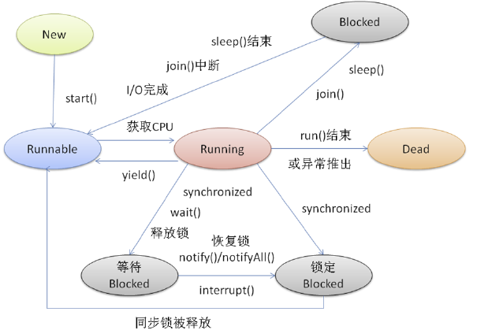
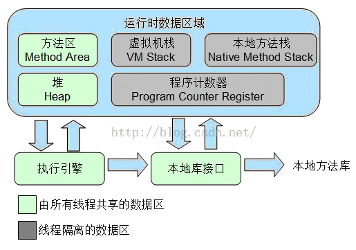
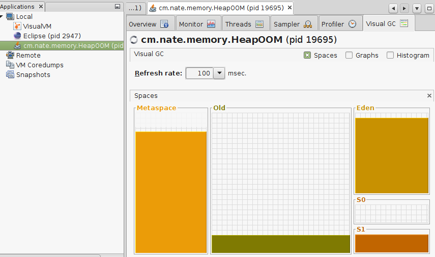

javac 工具
实例参见: -- examples
$ javac [ options ] [ sourcefiles ] [ classes] [ @argfiles ] # options -- 命令行选项 # sourcefiles -- 一个或多个要编译的源文件 # classes -- 一个或多个编译使用的注解类文件 # @argfiles -- 一个或多个对源文件进行列表的文件
options
-
-classpath <path>-- 指定查找用户类文件和注释处理程序的位置 -
-cp <path>-- 指定查找用户类文件和注释处理程序的位置 -
-sourcepath <path>-- 指定查找输入源文件的位置 -
-d <dir>-- 指定放置生成的类文件的位置 -
-s <dir>-- 指定放置生成的源文件的位置 -
-g-- 生成所有调试信息 -
-g:non e-- 不生成任何调试信息 -
-g:{lines,vars,source}-- 只生成某些调试信息 -
-nowarn-- 不生成任何警告 -
-verbose-- 输出有关编译器正在执行的操作的消息 -
-deprecation-- 输出使用已过时的 API 的源位置 -
-bootclasspath <path>-- 覆盖引导类文件的位置 -
-extdirs <dir>-- 覆盖所安装扩展的位置 -
-endorseddirs <dir>-- 覆盖签名的标准路径的位置 -
-proc:{none,only}-- 控制是否执行注释处理和/或编译。 -
-processor <class1>[,<class2>,<class3>...]-- 要运行的注释处理程序的名称; 绕过默认的搜索进程 -
-processorpath <path>-- 指定查找注释处理程序的位置 -
-implicit:{none,class}-- 指定是否为隐式引用文件生成类文件 -
-encoding <encode>-- 指定源文件使用的字符编码 -
-source <version>-- 提供与指定发行版的源兼容性 -
-target <version>-- 生成特定 VM 版本的类文件 -
-version-- 版本信息 -
-help-- 输出标准选项的提要 -
-Akey[=value]-- 传递给注释处理程序的选项 -
-X-- 输出非标准选项的提要 -
-J <tag>-- 直接将 <tag> 传递给运行时系统 -
-Werror-- 出现警告时终止编译
java 工具
实例参见: -- examples
$ java [options] classname [args] $ java [options] -jar filename [args]
Java启动命令可选项(options)大致可分为标准和非标准两种，非标准的可选项不保证在所有平台上都实现，并且未来的版本中可能会被修改且不告知，总之就是不稳定(Unstable)。不过有的非标准可选项还是非常有用的，后面我们会谈到。
标准可选项(Standard options)
-
-client 与 -server
以clien或者server模式启动，二选一，Java运行时环境会依场景来优化自己的配置策略。值得指出的是64位的Java不支持client模式，默认就是server。不同平台的默认配置可以参考 Server-Class Machine Detection -
-d32 与 -d64
程序运行在32位或者64位环境 -
-cp 和 -classpath
最重要的可选项之一，指定Java运行时环境搜索class的路径。-cp只是-classpath的简写，做相同的事情，用其中之一即可。多个路径用英文里面的分号分隔。如果-cp和-classpath都没有使用，CLASSPATH环境变量也没用设定，那么就是当前路径(.)。 -
-Dproperty=value
设定系统属性值，比如编码-Dfile.encoding=UTF-8。可以设定一些系统使用的属性，也可以用来向程序传递值，比如程序的根目录。 可以通过System.getProperty("keyname")来获取属性。 -
-help与-?
都是要求显示帮助信息 -
-disableassertions[:[packagename]...|:classname]与-da[:[packagename]...|:classname]
禁用断言，可以指定包名(注意包后面的三个点)或者class的名称。默认就是禁用的。da只是disableassertions的缩写，使用方法完全一样。 禁用包:da:org.slf4j...
禁用类:da:org.slf4j.LoggerFactory -
enableassertions[:packagename...|:classname]与ea[:packagename...|:classname]
启用断言，可以指定包名(注意包后面的三个点)或者class的名称。ea只是enableassertions的缩写，使用方法完全一样。 启用包:ea:org.slf4j...
启用类:ea:org.slf4j.LoggerFactory -
disablesystemassertions与dsa
禁用系统类(syetem class)断言 -
enablesystemassertions与esa
启用系统类(syetem class)断言 -
-version 与 -showversion
这两个都显示Java的版本信息，不过后者会把help的信息也显示出来。 -
verbose:class, verbose:gc, "verbose:jni"
verbose:class显示class加载信息，verbose:gc显示Java垃圾回收的信息。verbose:jni显示JNI(Java Native Interface)信息。 -
-agentlib:libname[=options]与-agentpath:pathname[=options]
都是加载本地代理库(Native Agent Library)，-agentlib只需要library的名称，且会根据不同的操作系统转为对应的文件(Windows为DLL)。 -agentpath指定library的绝对路径。
非标准可选项(Nonstandard Options)
非标准的可选项都以-X开始，其中的部分选项如下:
-
-X
显示所有非标准选项的信息。看看都有些什么非标准选项吧。java -X。 -
-Xms<size>
设置Java堆的初始化大小。例如 -Xms1024m，Java堆的初始化大小就设置为1G。 -
-Xmx<size>
设置Java堆的最大值。例如 -Xmx3072m，Java堆的最大值就设置为3G。 -
-Xss<size>
设置Java线程栈的值。例如 -Xss128m，Java线程栈的值就设置为128兆。 -
-Xnoclassgc
禁用Java垃圾回收器。 -
-Xincgc
启用Java增量式垃圾回收器。 -
-Xmixed
解释模式和编译模式混合执行 -
-Xint
仅解释模式执行 -
-Xshare:on，-Xshare:off，-Xshare:auto 设定类数据共享CDS(Class data sharing)是否开启。-Xshare:on要求一定要用共享的类数据；-Xshare:auto表示让系统自己判断 是否有类共享数据，有就用，没有不用；-Xshare:off禁用共享类数据。
-
-Xcheck:jni
针对JNI函数做额外的检查
不稳定(Unstable)的选项
不稳定的选项当然是非标准的，都以-XX开头。这一类参数有很多，暂时只列其中的几个:
-
-XX:PermSize<=size>和-XX:MaxPermSize<=size>
设置Java永久保存区域(Permanent Generation Space)的大小。PermSize设置初始值，MaxPermSize设置最大值。 该区域主要存储class的信息，且不会被 垃圾回收器回收，如果加载的class过多，就会报错:java.lang.OutOfMemoryError: PermGen space。 -XX:PermSize=64m -XX:MaxPermSize=128m，表示Java永久保存区域大小初始化问为64兆，最大为128兆。 -
-XX:+UseParallelGC
开启并行Java回收器 -
-XX:+PrintGCDetails
显示比-verbose:gc更多更准确的垃圾回收信息 -
-XX:+TraceClassLoading
显示类加载以及卸载的信息
jar 工具
实例参见: -- examples
# 创建 jar $ jar c[efmMnv0] [entrypoint] [jarfile] [manifest] [-C dir] file ... [-Joption ...] [@arg-file ...] # 更新 jar $ jar u[efmMnv0] [entrypoint] [jarfile] [manifest] [-C dir] file ... [-Joption ...] [@arg-file ...] # 解压 jar $ jar x[vf] [jarfile] file ... [-Joption ...] [@arg-file ...] # 查看 jar 列出 jar 内容 $ jar t[vf] [jarfile] file ... [-Joption ...] [@arg-file ...] # 为 jar 创建索引 $ jar i jarfile [-Joption ...] [@arg-file ...]
example
$ jar [cuxti][efmMnv0] jarfile [-C dir] [@arg-file ...] # 前面5个参数必先其一 # f 指定jar包路径 # v 生成详细的报造，并输出至标准设备 # m 指定MANIFEST.MF配置文件位置 -M 不产生所有文件的清单文件(Manifest.mf) # 0 产生jar包时不对其中的内容进行压缩处理 # i 为指定的jar文件创建索引文件 # -C 表示转到相应的目录下执行jar命令,相当于cd到那个目录，然后不带-C执行jar命令 # 打成jar包 $ jar cvf build/libs/demo.jar -C build/classes/ cm # 打成jar包, 在这里指定 MANIFEST.MF 配置文件为：config/manifest-config.txt $ jar cvfm build/libs/demo.jar config/manifest-config.txt -C build/classes/ cm # 列出 jar 内容 $ jar tvf build/libs/demo.jar
keytool 工具
keytool 是一个 Java 的密钥和证书管理，使用户能够管理自己的公钥/私钥对和相关证书以供自己使用或使用数字签名的数据完整性和身份验证服务。将密钥和证书存在一个称为 keystore 的文件中。
keytool 命令：
## 1.创建/添加数据到 keystore
-genseckey ## 生成密钥
-genkeypair/-genkey ## 生成公钥/私钥对
-gencert ## 生成证书
-importcert/import ## 导入证书
-importpassword ## 导入密码
## 2.从另一个 keystore 导入内容
-importkeystore ## 导入内容
## 3.生成证书请求
-certreq ## 生成证书请求
## 4.导出数据
-exportcert ## 导出数据
## 5.显示数据
-list ## 查看 keystore 信息
-printcert ## 查看证书信息
-printcertreq ##
-printcrl ##
## 6.管理 keystore
-storepasswd ## 更改 storepass
-keypasswd ## 更改 keypass
-delete ## 删除
-changealias ## 更改别名
keytool 默认参数：
-alias ## 别名，如不指定，默认为： mykey -keyalg ## 加密算法 ## "DSA" 如不指定算法，在创建公钥/私钥对的时候(-genkeypair) ## "DES" 如不指定算法，在创建密钥的时候(-genseckey)默认为: DES -keysize ## 密码长度 ## 2048 如不指定大小，在创建公钥/私钥对，并且加密算法为 RSA 的时候(-genkeypair and -keyalg "RSA") ## 1024 如不指定大小，在创建公钥/私钥对，并且加密算法为 RSA 的时候(-genkeypair and -keyalg "DSA") ## 256 如不指定大小，在创建公钥/私钥对，并且加密算法为 EC 的时候(-genkeypair and -keyalg "EC") ## 56 如不指定大小，在创建密钥，并且加密算法为 DES 的时候(-genseckey and -keyalg "DES") ## 168 如不指定大小，在创建密钥，并且加密算法为 DESede 的时候(-genseckey and -keyalg "DESede") -validity ## 如不指定，默认为： 90 天 -keystore ## 如不指定，默认为：～/.keystore -storetype ## 默认为: KeyStore.getDefaultType();可选：jceks(-genseckey 只能用这个), jks, dks, pkcs11, pkcs12 -file stdin 读为标准输入 stdout 写为标准输出 -protected false
keytool 实例：
## 1.创建 DES 加密的密钥(默认为 DES 加密) $ keytool -genseckey -alias des -storepass ilesson -keypass ilessonKey -storetype jceks -keystore des.jce ## 2.创建 DESede 加密的密钥(未指定 keypass, 需要在控制台输入) $ keytool -genseckey -alias DESede -storepass ilesson -keyalg DESede -storetype jceks -keystore des.jce ## 3.查看 keystore 中的密钥信息 $ keytool -list -v -keystore des.jce -storepass ilesson -storetype jceks $ keytool -list -rfc -keystore des.jce -storepass ilesson -storetype jceks ## 4.生成 RSA 加密，SHA256withRSA 签名，有效期 365 天的 2048 位私钥 $ keytool -genkeypair -alias rsa -storepass ilesson -storetype jceks -keystore private.jce -keyalg RSA -validity 365 -dname "CN=lesson1234.com, OU=ilesson, O=ilesson, L=ShenZhen, ST=GuangDong, C=CN" $ keytool -list -v -keystore private.jce -storepass ilesson -storetype jceks ## 查看有效期，加密算法... $ keytool -list -rfc -keystore private.jce -storepass ilesson -storetype jceks ## 查看 Base64 格式的密码 ## 5.导出为单个条目为 CRT 文件 $ keytool -exportcert -alias rsa -keystore private.jce -file private.crt -storepass ilesson $ keytool -printcert -file private.crt -rfc ## 查看证书信息 ## 6.导入一个证书到 keystore $ keytool -importcert -keystore des.jce -storepass ilesson -storetype jceks -file private.crt ## 7.删除指定别名的条目 $ keytool -delete -alias rsa -keystore private.jce -storepass ilesson ## 8.修改 storepass $ keytool -storepasswd -keystore private.jce -storepass ilesson -new ilesson_modify ## 9.修改 keypass $ keytool -keypasswd -alias rsa -keypass ilessonKey -new ilessonKey_modify -keystore private.jce -storepass ilesson
keytool 命令详情：
-genseckey
-alias <alias> ## 别名
-storepass <arg> ## keystore 密码
-storetype <storetype> ## keystore 类型
-keystore <keystore> ## keystore 路径
-keyalg <keyalg> ## 加密算法
-keysize <keysize> ## 密钥大小
-keypass <arg> ## key 密码
-v ## verbose 输出
-protected ## 通过受保护的身份验证路径
-genseckeypair
-alias <alias> ## 别名
-destalias <destalias> ## 目标别名
-storepass <arg> ## keystore 密码
-storetype <storetype> ## keystore 类型
-keystore <keystore> ## keystore 路径
-keyalg <keyalg> ## 加密算法
-keysize <keysize> ## 密钥大小
-keypass <arg> ## key 密码
-sigalg <sigalg> ## 签名算法
-startdate <startdate> ## 证书有效期开始日期，一般从现在开始，不用写，格式为： yyyy/mm/dd HH:MM:SS
-validity <valDays> ## 有效期
-ext <value> ##
-dname <dname> ## CN=(名字), OU=(组织单位名称), O=(组织名称), L=(城市), ST=(省份), C=(两位国家代码)
-v ## verbose 输出
-protected ## 通过受保护的身份验证路径
examples
-
只有源文件，不引用第三方jar，编译运行，打包：(还没有使用
libs/commons-lang3-3.5.jar中的StringUtils类)# 编译 java 源代码 $ javac -d build/classes/ \ src/cm/nate/model/Person.java \ src/cm/nate/Main.java # 要编译的源文件太多时，可以写入 res/source-list.txt 文件 $ javac -d build/classes @config/source-list.txt # 直接运行class $ java -cp "build/classes" cm.nate.Main # 打成jar包 $ jar cvf build/libs/demo.jar -C build/classes/ cm # 运行jar包 $ java -cp build/libs/demo.jar cm.nate.Main
-
源文件引用第三方jar，编译运行，打包：(使用
libs/commons-lang3-3.5.jar中的StringUtils类)# 编译 java 源代码 $ javac -d build/classes \ -cp libs/commons-lang3-3.5.jar \ @config/source-list.txt # 直接运行class $ java -cp \ "build/classes:libs/commons-lang3-3.5.jar" \ cm.nate.Main # 打成jar包 $ jar cvf build/libs/demo.jar -C build/classes/ cm # 运行jar包 $ java -cp \ build/libs/demo.jar:libs/commons-lang3-3.5.jar \ cm.nate.Main
目录结构如下:
├── build
│ ├── classes
│ │ └── cm
│ │ └── nate
│ │ ├── Main.class
│ │ └── model
│ │ └── Person.class
│ ├── docs
│ └── libs
│ ├── demo.jar
│ └── libs
│ └── commons-lang3-3.5.jar
├── config
│ ├── manifest-config.txt
│ └── source-list.txt
├── libs
│ └── commons-lang3-3.5.jar
└── src
└── cm
└── nate
├── Main.java
└── model
└── Person.java
-
打包可运行的jar包(在
MANIFEST.MF文件中指定主类),因为这里引用了第三方的jar，可以使用下面的两种方法：-
在
manifest-config.txt文件中指定Class-Path(多个jar用空格分割)和Main-Class,注意最后有空行要保留Class-Path: libs/commons-lang3-3.5.jar Main-Class: cm.nate.Main
要注意的是当前目录下要有
libs/commons-lang3-3.5.jar# 编译 java 源代码 $ javac -d build/classes -cp libs/commons-lang3-3.5.jar @config/source-list.txt # 直接运行class $ java -cp "build/classes:libs/commons-lang3-3.5.jar" cm.nate.Main # 打成jar包, 在这里指定 MANIFEST.MF 配置文件为：config/manifest-config.txt $ jar cvfm build/libs/demo.jar config/manifest-config.txt -C build/classes/ cm # 运行jar包，能运行是因为在当前目录下有 libs/commons-lang3-3.5.jar存在 $ java -jar build/libs/demo.jar
-
在
manifest-config.txt文件中指定Main-Class,注意最后有空行要保留Main-Class: cm.nate.Main
要注意的是要解析依赖的jar包，然后打包的时候一起打包进去
# 编译 java 源代码 $ javac -d build/classes -cp libs/commons-lang3-3.5.jar @config/source-list.txt # 直接运行class $ java -cp "build/classes:libs/commons-lang3-3.5.jar" cm.nate.Main # 将依赖的jar 解压到 build/classes 目录下,下一步一起打包成自己的jar $ unzip libs/commons-lang3-3.5.jar -d build/classes # 打成jar包, 在这里指定 MANIFEST.MF 配置文件为：config/manifest-config.txt $ jar cvf build/libs/demo.jar config/manifest-config.txt \ -C build/classes/ cm -C build/classes org # 运行jar包，能运行是因为依赖的jar包，所有的class被一起打包到 demo.jar中了 $ java -jar build/libs/demo.jar
-
Java 基本数据类型和 String
基本数据类型包括 boolean（布尔型）、float（单精度浮点型）、char（字符型）、byte（字节型）、short（短整型）、int（整型）、long（长整型）和 double （双精度浮点型）共 8 种基本数据类型包括 boolean（布尔型）、float（单精度浮点型）、char（字符型）、byte（字节型）、short（短整型）、int（整型）、long（长整型）和 double （双精度浮点型）共 8 种:
| 类型名称 | 关键字 | 占用内存 | 取值范围 |
|---|---|---|---|
| 字节型 | byte | 1 字节 | -128~127, -0x80~0x7F |
| 短整型 | short | 2 字节 | -32768~32767, -0x8000~0x7FFF |
| 整型 | int | 4 字节 | -2147483648~2147483647, -0x80000000~0x7FFFFFFF |
| 长整型 | long | 8 字节 | -9223372036854775808L~9223372036854775807L, -0x8000000000000000L~0x7FFFFFFFFFFFFFFFL |
| 单精度浮点型 | float | 4 字节 | +/-3.4E+38F（6~7 个有效位） |
| 双精度浮点型 | double | 8 字节 | +/-1.8E+308 (15 个有效位） |
| 字符型 | char | 2 字节 | ISO 单一字符集, \u0000~\uFFFF |
| 布尔型 | boolean | 1 字节 | true 或 false |
基本类型的存取
try {
// 创建临时文件，并在退出时删除
File f = File.createTempFile("base", ".tmp");
f.deleteOnExit();
// 写入基本类型，在写 UTF 时，其实在前面加了两个字节标识其长度，因此允许最大长度为 65535
DataOutputStream dos = new DataOutputStream(new FileOutputStream(f));
dos.writeBoolean(true);
dos.writeBoolean(false);
dos.writeChar('1');
dos.writeByte(1);
dos.writeInt(1);
dos.writeShort(1);
dos.writeLong(1L);
dos.writeFloat(3.14f);
dos.writeDouble(3.14);
dos.writeUTF("Hello");
dos.writeInt(1024);
dos.flush();
dos.close();
DataInputStream dis = new DataInputStream(new FileInputStream(f));
/** 先来看写入文件的二进制，这里用十六进制展示：
* 01 00 0031 01 00000001 0001 0000000000000001 4048F5C3 40091EB851EB851F 000548656C6C6F 00000400
* 01 -- boolean 的 true 在这里存储的是 int 值 1 的低 8 位， 在读取的时候 非 0 则为 true
* 00 -- boolean 的 true 在这里存储的是 int 值 0 的低 8 位， 在读取的时候 0 则为 false
* 0031 -- 是 ‘1’ 的 utf-16 编码的 unicode 值
* 01 -- 是 int 值 1 的低 8 位
* 00000001 -- 是 int 1 的 int 值
* ... short, long, float, double 分别以 2字节，8字节，4字节，8字节存储
* 000548656C6C6F -- 这个是 utf-8 方式存储的 "Hello", 用两个字节: 0005 标识长度， 后面是 String 的 utf-8 编码值
* 00000400 -- 是 1024
*/
byte[] bytes = new byte[(int) f.length()];
dis.read(bytes); // 全部读出来，就是上面的二进制
log(bytesToHex(bytes));
dis.skip(-f.length()); // 回到原始位置
log(dis.readBoolean());
log(dis.readBoolean());
log(dis.readChar());
log(dis.readByte());
log(dis.readInt());
log(dis.readShort());
log(dis.readLong());
log(dis.readFloat());
log(dis.readDouble());
log(dis.readUTF());
log(dis.readInt());
dis.close();
} catch (IOException e) {
e.printStackTrace();
}
基本类型的使用
byte b1 = 1;
byte b2 = 0x1;
byte b3 = 0b1;
byte b4 = -0b1;
byte b5 = (byte) 0b11111111111111111111111111111111;
byte b6 = (byte) 0b11111111111111111111111111111110;
byte b7 = (byte) 0b11111111111111111111111111111101;
log(b1, b2, b3, b4, b5, b6, b7); // 1 1 1 -1 -1 -2 -3
// char 使用 unicode 字符集， 但其长度为 2 个字节， 因此只能表示 BMP 平面的字符，采用 utf-16 编码
char c1 = 'a';
char c2 = 97;
char c3 = 0x61;
char c4 = 0b1100001;
char c5 = '\u0061';
log(c1, c2, c3, c4, c5); // a a a a a
// 注意此处的最后 4 个 char 表示为两个 unicode 的 SMP 平面的字符
char[] chars = new char[]{'\u0061', '\u0033','\u0020', '\u03b1', '\u03b2', '\u0020', '\u4f60', '\u597d',
'\u0020', '\ud83c', '\udca1', '\ud83c', '\udca2'};
String s1 = new String(chars);
log(s1, s1.length()); // a3 αβ 你好 🂡🂢 13
String s2 = "a3 αβ 你好 \uD83C\uDCA1\uD83C\uDCA2";
/** 此处数出的字符只有 11 个，但是它的长度为 13, 因为 String 内部使用 char[] 存储， length() 函数返回 char[] 长度 */
log(s2, s2.length()); // a3 αβ 你好 🂡🂢 13
log(s1.equals(s2)); // true
log(Integer.MIN_VALUE, Integer.MAX_VALUE); // -2147483648 2147483647
int i_min = -2147483648;
int i_max = 2147483647;
log(i_min, i_max); // -2147483648 2147483647
/** 首先确定为负数，值为按位取反+1; 0x01111111111111111111111111111111 + 1 */
int ib_min = 0b10000000000000000000000000000000;
int ib_max = 0b01111111111111111111111111111111;
log(ib_min, ib_max); // -2147483648 2147483647
int ix_min = 0x80000000;
int ix_max = 0x7FFFFFFF;
log(ix_min, ix_max); // -2147483648 2147483647
String 类的编码/解码/转换
public static void main(String[] args) {
// 注意此处的最后 4 个 char 表示为两个 unicode 的 SMP 平面的字符
char[] chars = new char[]{'\u0061', '\u0033','\u0020', '\u03b1', '\u03b2', '\u0020', '\u4f60',
'\u597d', '\u0020', '\ud83c', '\udca1', '\ud83c', '\udca2'};
String s1 = new String(chars);
log(s1, s1.length()); // a3 αβ 你好 🂡🂢 13
String s2 = "a3 αβ 你好 \uD83C\uDCA1\uD83C\uDCA2";
// 数出类的字符只有 11 个，但是它的长度为 13, 因为 String 内部使用 char[] 存储， length() 函数返回 char[] 长度
log(s2, s2.length()); // a3 αβ 你好 🂡🂢 13
log(s1.equals(s2)); // true
// s1 的 utf-8 编码： 61 33 20 ce b1 ce b2 20 e4 bd a0 e5 a5 bd 20 f0 9f 82 a1 f0 9f 82 a2
String UTF8Hex = bytesToHex(s1.getBytes(StandardCharsets.UTF_8));
log("UTF-8: " + UTF8Hex);
log("UTF-8 Hex 还原: " + new String(hexToBytes(UTF8Hex)));
String UTF16Hex = bytesToHex(s1.getBytes(StandardCharsets.UTF_16));
log("UTF-16: " + UTF16Hex);
log("UTF-16 Hex 还原: " + new String(hexToBytes(UTF16Hex), StandardCharsets.UTF_16));
String UTF16BEHex = bytesToHex(s1.getBytes(StandardCharsets.UTF_16BE));
log("UTF-16BE: " + UTF16BEHex);
log("UTF-16BE Hex 还原: " + new String(hexToBytes(UTF16BEHex), StandardCharsets.UTF_16BE));
String UTF16LEHex = bytesToHex(s1.getBytes(StandardCharsets.UTF_16LE));
log("UTF-16LE: " + UTF16LEHex);
log("UTF-16LE Hex 还原: " + new String(hexToBytes(UTF16LEHex), StandardCharsets.UTF_16LE));
// 以上部分为标准编码， 以下部分不保证所有平台都有
String UTF32Hex = bytesToHex(s1.getBytes(Charset.forName("UTF-32")));
log("UTF-32: " + UTF32Hex);
log("UTF-32 Hex 还原: " + new String(hexToBytes(UTF32Hex), Charset.forName("UTF-32")));
String UTF32BEHex = bytesToHex(s1.getBytes(Charset.forName("UTF-32BE")));
log("UTF-32BE: " + UTF32BEHex);
log("UTF-32BE Hex 还原: " + new String(hexToBytes(UTF32BEHex), Charset.forName("UTF-32BE")));
String UTF32LEHex = bytesToHex(s1.getBytes(Charset.forName("UTF-32LE")));
log("UTF-32LE: " + UTF32LEHex);
log("UTF-32LE Hex 还原: " + new String(hexToBytes(UTF32LEHex), Charset.forName("UTF-32LE")));
// 以下为当前平台所有支持的编码
Charset.availableCharsets().forEach((name, c) -> {
log(name);
});
}
public static byte[] hexToBytes(String hex){
// 必须为 16 进制字符，否则返回空的 bytes
if(!Pattern.matches("^[0-9A-Fa-f]+$", hex)) {
return new byte[]{};
}
// 如果不是偶数，前面补一个 0
hex = hex.length() % 2 != 0 ? "0" + hex : hex;
byte[] b = new byte[hex.length() / 2];
for (int i = 0; i < b.length; i++) {
int index = i * 2;
int v = Integer.parseInt(hex.substring(index, index + 2), 16);
b[i] = (byte) v;
}
return b;
}
public static String bytesToHex(byte[] bytes) {
StringBuilder builder = new StringBuilder();
for (byte b : bytes) {
String hex = Integer.toHexString(b & 0xff);
builder.append(hex.length() == 1 ? "0" + hex : hex);
}
return builder.toString().toUpperCase();
}
Java 中的几个关键字
- static 关键字
- final 关键字
- transient 关键字 -- 在成员变量前加此关键字，此成员变量不会被序列化
- synchronized 关键字 -- 参见: Java 多线程
static 关键字
// 静态导入指定成员
import static java.lang.System.out;
// 导入所有静态成员和静态方法
import static java.lang.System.*;
public class StaticDemo {
// 静态成员
public static final String TAG = "StaticDemo";
// 静态代码块
static {
System.out.println("===静态代码块===");
}
// 静态内部类
public static class Inner {
public static void show(){
System.out.println("===静态内部类===");
}
}
// 静态方法
public static void main(String[] args) {
// 因为静态导入了 java.lang.System.out 这个成员，才能这样用
out.println("===静态导包===");
getenv();
StaticDemo.Inner.show();
}
}
final 关键字
// final 类, 不能被继承，没有子类
public final class FinalDemo {
// final 成员, 不能修改
public static final String TAG = "FinalDemo";
// final 方法, 不能 Override
public final void show() {
System.out.println("===成员方法===");
}
// final 内部类
public final class Inner {
public void log() {
System.out.println("===final 内部类===");
}
}
// final 参数, jdk 1.6 中必须加 final, 才能在方法中的内部类中访问 arg 这个参数
public void argument(final String arg) {
Runnable thread = new Runnable() {
public void run() {
System.out.println("=== final 参数才能传入到方法的内部类中 ===" + arg);
}
};
new Thread(thread).start();
}
public static void main(String[] args) {
new FinalDemo().argument("xxxxxxxx");
}
}
ClassLoader 原理分析
类的加载过程指通过一个类的全限定名来获取描述此类的二进制字节流，并将其转化为方法区的数据结构，进而生成一个java.lang.Class对象作为方法区这个类各种数据访问的入口。这个过程通过Java中的类加载器(ClassLoader)来完成。
类装载器是用来把类(class)装载进JVM的。JVM规范定义了两种类型的类装载器：启动内装载器(bootstrap)和用户自定义装载器(user-defined class loader)。
一、Java默认提供的三个ClassLoader
JVM在运行时会产生三个ClassLoader:Bootstrap ClassLoader、Extension ClassLoader和AppClassLoader（System ClassLoader）。
1、 Bootstrap ClassLoader（启动类加载器）负责将%JAVA_HOME%/lib目录中或-Xbootclasspath中参数指定的路径中的，并且是虚拟机识别的（按名称）类库加载到JVM中。
也可以通过-Xbootclasspath参数定义。该ClassLoader不能被Java代码实例化，因为它是JVM本身的一部分。
2、Extension ClassLoader（扩展类加载器）负责加载%JAVA_HOME%/lib/ext中的所有类库;
只要jar包放置这个位置，就会被虚拟机加载。一个常见的、类似的问题是，你将mysql的低版本驱动不小心放置在这儿，但你的Web应用程序的lib下有一个新的jdbc驱动，但怎么都报错，譬如不支持JDBC2.0的 DataSource，这时你就要当心你的新jdbc可能并没有被加载。这就是ClassLoader的delegate现象。常见的有log4j、 common-log、dbcp会出现问题，因为它们很容易被人塞到这个ext目录，或是Tomcat下的common/lib目录
3、Application ClassLoader：也称为System ClassLoaer（加载%CLASSPATH%路径的类库）以及其它自定义的ClassLoader。缺省情况下，它是用户创建的任何ClassLoader的父ClassLoader。
我们创建的standalone应用的main class缺省情况下也是由它加载(通过Thread.currentThread().getContextClassLoader()查看)。实际开发中用ClassLoader更多时候是用其加载classpath下的资源，特别是配置文件，如ClassLoader.getResource()，比FileInputStream直接。
类加载器 classloader 是具有层次结构的，也就是父子关系。其中，Bootstrap 是所有类加载器的父亲。如下图所示：

注意： 除了Java默认提供的三个ClassLoader之外，用户还可以根据需要定义自已的ClassLoader，而这些自定义的ClassLoader都必须继承自java.lang.ClassLoader类，也包括Java提供的另外二个ClassLoader（Extension ClassLoader和App ClassLoader）在内，但是Bootstrap ClassLoader不继承自ClassLoader，因为它不是一个普通的Java类，底层由C++编写，已嵌入到了JVM内核当中，当JVM启动后，Bootstrap ClassLoader也随着启动，负责加载完核心类库后，并构造Extension ClassLoader和App ClassLoader类加载器。
二、双亲委托模型
Java中ClassLoader的加载采用了双亲委托机制，采用双亲委托机制加载类的时候采用如下的几个步骤：
1、当前ClassLoader首先从自己已经加载的类中查询是否此类已经加载，如果已经加载则直接返回原来已经加载的类；
每个类加载器都有自己的加载缓存，当一个类被加载后就放入缓存，当下次加载时就可以直接返回了。
2、当前classLoader的缓存中没有找到被加载的类的时候，委托父类加载器去加载，父类加载器采用同样的策略，首先查看自己的缓存，然后委托父类的父类去加载，一直到bootstrp ClassLoader.
3、当所有的父类加载器都没有加载的时候，再由当前的类加载器加载，并将其放入它自己的缓存中，以便下次有加载请求的时候直接返回。
JVM中类加载的机制——双亲委派模型。这个模型要求除了Bootstrap ClassLoader外，其余的类加载器都要有自己的父加载器。子加载器通过组合来复用父加载器的代码，而不是使用继承。在某个类加载器加载class文件时，它首先委托父加载器去加载这个类，依次传递到顶层类加载器(Bootstrap)。如果顶层加载不了（它的搜索范围中找不到此类），子加载器才会尝试加载这个类。
当JVM请求某个ClassLoader实例使用这种模型来加载某个类时，首先检查该类是否已经被当前类加载器加载，如果没有被加载，则先委托给她的父类加载器即调用parent.loadClass()方法，这样一直请求调用到请求顶层类加载ClassLoader#findBootStrapClassOrNull,如果这个方法依然加载不了，则会调用ClassLoader#findClass()方法，这个方法再找不到则会抛出ClassNotFoundException异常，但是这里的异常会被捕获，然后返回给委托发起者，最后由当前类加载器的findClass()方法类加载类，如果找不到则抛出ClassNotFoundException异常。
Class查找的位置和顺序依次是：Cache、parent、self
三、ClassLoader加载类的原理
1、原理介绍
ClassLoader使用的是双亲委托模型来搜索类的，每个ClassLoader实例都有一个父类加载器的引用（不是继承的关系，是一个包含的关系），虚拟机内置的类加载器（Bootstrap ClassLoader）本身没有父类加载器，但可以用作其它ClassLoader实例的的父类加载器。当一个ClassLoader实例需要加载某个类时，它会试图亲自搜索某个类之前，先把这个任务委托给它的父类加载器，这个过程是由上至下依次检查的，首先由最顶层的类加载器Bootstrap ClassLoader试图加载，如果没加载到，则把任务转交给Extension ClassLoader试图加载，如果也没加载到，则转交给App ClassLoader 进行加载，如果它也没有加载得到的话，则返回给委托的发起者，由它到指定的文件系统或网络等URL中加载该类。如果它们都没有加载到这个类时，则抛出ClassNotFoundException异常。否则将这个找到的类生成一个类的定义，并将它加载到内存当中，最后返回这个类在内存中的Class实例对象。
2、为什么要使用双亲委托这种模型呢？
因为这样可以避免重复加载，当父亲已经加载了该类的时候，就没有必要子ClassLoader再加载一次。考虑到安全因素，我们试想一下，如果不使用这种委托模式，那我们就可以随时使用自定义的String来动态替代java核心api中定义的类型，这样会存在非常大的安全隐患，而双亲委托的方式，就可以避免这种情况，因为String已经在启动时就被引导类加载器（Bootstrcp ClassLoader）加载，所以用户自定义的ClassLoader永远也无法加载一个自己写的String，除非你改变JDK中ClassLoader搜索类的默认算法。
3、JVM在搜索类的时候，如何判断两个class相同呢？
JVM在判定两个class是否相同时，不仅要判断两个类名是否相同，而且要判断是否由同一个类加载器实例加载的。只有两者同时满足的情况下，JVM才认为这两个class是相同的。就算两个class是同一份class字节码，如果被两个不同的ClassLoader实例所加载，JVM也会认为它们是两个不同class。
比如网络上的一个Java类org.classloader.simple.NetClassLoaderSimple，javac编译之后生成字节码文件NetClassLoaderSimple.class，ClassLoaderA和ClassLoaderB这两个类加载器并读取了NetClassLoaderSimple.class文件，并分别定义出了java.lang.Class实例来表示这个类，对于JVM来说，它们是两个不同的实例对象，但它们确实是同一份字节码文件，如果试图将这个Class实例生成具体的对象进行转换时，就会抛运行时异常java.lang.ClassCaseException，提示这是两个不同的类型。
在一个单虚拟机环境下，标识一个类有两个因素：class的全路径名、该类的ClassLoader。
4、ClassLoader 体系架构

四、自定义ClassLoader
为什么我们需要自定义类加载？
主要原因：1、需要加载外部的Class,JVM提供的默认ClassLoader只能加载指定目录下的.jar和.class,如果我们想加载其它位置的class或者jar时，这些默认的类加载器是加载不到的（如果是文件格式必须配置到classpath）。例如：我们需要加载网络上的一个class字节流；
2、需要实现Class的隔离性。目前我们常用的Web服务器，如tomcat、jetty都实现了自己定义的类加载，这些类加载主要完成以下三个功能：
- A.实现加载Web应用指定目录下的jar和class
- B.实现部署在容器中的Web应用程共同使用的类库的共享
- C.实现部署在容器中各个Web应用程序自己私有类库的相互隔离
如何自定义类加载？
- 继承java.lang.ClassLoader
- 覆写父类的findClass()方法
Java 泛型
泛型的本质是为了参数化类型（在不创建新的类型的情况下，通过泛型指定的不同类型来控制形参具体限制的类型）。也就是说在泛型使用过程中，操作的数据类型被指定为一个参数，这种参数类型可以用在类、接口和方法中，分别被称为泛型类、泛型接口、泛型方法。
Java 中的泛型，只在编译阶段有效 -- 在编译过程中，正确检验泛型结果后，会将泛型的相关信息擦除，并且在对象进入和离开方法的边界处添加类型检查和类型转换的方法。也就是说，泛型信息不会进入到运行时阶段。
泛型类
public class Generic<T>{
// key 这个成员变量的类型为 T,T 的类型由外部指定
private T key;
// 泛型构造方法形参 key 的类型也为 T，T 的类型由外部指定
public Generic(T key) { this.key = key; }
// 泛型方法 getKey 的返回值类型为 T，T 的类型由外部指定
public T getKey() { return key; }
}
数组的协变
首先了解下什么是数组的协变，看下面的例子：
Number[] nums = new Integer[10]; // OK
因为 Integer 是 Number 的子类，一个 Integer 对象也是一个 Number 对象，所以一个 Integer 的数组也是一个 Number 的数组，这就是数组的协变。
Java 把数组设计成协变的，在一定程度上是有缺陷的。因为尽管把 Integer[] 赋值给 Number[]，Integer[] 可以向上转型为 Number[]，但是数据元素的实际类型是 Integer，只能向数组中放入 Integer 或者 Integer 的子类。如果向数组中放入 Number 对象或者 Number 其他子类的对象，对于编译器来说也是可以通过编译的。但是运行时 JVM 能够知道数组元素的实际类型是 Integer，当其它对象加入数组是就会抛出异常。
Number[] numbers = new Integer[10];
numbers[0] = 1;
numbers[1] = 0.5f; // 此数据的加入可以通过编译，但是以下运行时会有 ArrayStoreException 异常
for (Number number : numbers) {
System.out.println(number);
}
泛型的设计目的之一就是保证了类型安全，让这种运行时期的错误在编译期就能发现，所以泛型是不支持协变的。
List<Number> nums = new ArrayList<Integer>(); // 编译不能通过
当确实需要建立这种向上转型的类型关系的时候，就需要用到泛型的通配符特性了。例如：
List<? extends Number> nums = new ArrayList<Integer>(); // OK
泛型通配符 -- 无边界通配符, 上边界限定的通配符 和 下边界限定的通配符
PECS 原则（Producer Extends Consumer Super）
对于上边界限定的通配符，无法向其中加入任何对象，但是可以从中正常取出对象。
对于下边界限定的通配符，可以存入 subclass 对象或者 subclass 的子类对象，但是取出时只能用 Object 类型变量指向取出的对象。
简而言之，上边界限定（extends）的通配符适合于内容的获取，而下边界限定（super）的通配符更适合于内容的存入。所以就有了一个 PECS 原则来很好的解释这两种通配符的使用原则。
当一个数据结构作为 producer 对外提供数据的时候，应该只能取数据而不能存数据，所以适合使用上边界限定（extends）的通配符。
当一个数据结构作为 consumer 获取并存入数据的时候，应该只能存数据而不能取数据，所以适合使用下边界限定（super）的通配符。
如果既需要取数据也需要存数据，就不适合使用泛型的通配符。
// dest 只能存数据而不能取数据， src 只能取数据而不能存数据
public static <T> void copy(List<? super T> dest, List<? extends T> src) {
for (int i = 0; i < src.size(); i++) {
dest.set(i, src.get(i));
}
}
无边界通配符
List, List<Object> 和 List<?> 的区别：
结论：List = List<Object>
List<?>是表示持有某种特定类型对象的 List，但是不知道是哪种类型；List / List<Object>是表示持有 Object 类型对象的 List。List<?>因为不知道持有的实际类型，所以不能 add 任何类型的对象；List / List<Object>因为持有的是 Object 类型对象，所以可以 add 任何类型的对象。List<?>可以add(null)，因为 null 是任何引用数据类型都具有的元素。
public static void main(String[] args) {
List list = new ArrayList();
List<Object> listObject = new ArrayList<>();
List<?> listUnbounded = new ArrayList<>();
list.add(1);
list.add(0.5f);
list.add(null);
listObject.add(1);
listObject.add(0.5f);
listObject.add(null);
// listUnbounded.add(1); // 编译错误，不知道持有的实际类型，所以不能 add 任何类型的对象
// listUnbounded.add(0.5f); // 编译错误，不知道持有的实际类型，所以不能 add 任何类型的对象
listUnbounded.add(null); // 可以，List<?> 只可以 add(null)，因为 null 是任何引用数据类型都具有的元素
list(list);
list(listObject);
list(listUnbounded);
listObject(list);
listObject(listObject);
// listObject(listUnbounded); // 编译错误，指定参数为 List<Object>， 而 List<?> 不是 List<Object>
listUnbounded(list);
listUnbounded(listObject);
listUnbounded(listUnbounded);
}
static void list(List list) {
for (Object o : list) {
System.out.println("List -> " + o);
}
}
static void listObject(List<Object> list) {
for (Object o : list) {
System.out.println("List<Object> -> " + o);
}
}
static void listUnbounded(List<?> list) {
for (Object o : list) {
System.out.println("List<?> -> " + o);
}
}
上边界限定的通配符
上边界限定的通配符使用 <? extends T> 限定，比如： List<? extends Number>，有如下特性：
List<? extends Number> 表示某种特定类型（Number 或者 Number 的子类）对象的 List。跟无边界通配符一样，因为无法确定持有的实际类型，所以这个 List 也不能 add 除 null 外的任何类型的对象。
list.add(new Integer(1)); // ERROR list.add(null); // OK
从 list 中获取对象是是可以的（比如 get(0)），因为在这个 List 中，不管实际类型是什么，但肯定都能转型为 Number。
Number n = list.get(0); // OK Integer i = list.get(0); // error
事实上，只要是形式参数有使用类型参数的方法，在使用无边界或者上边界限定的通配符的情况下，都不能调用。比如以 ArrayList 为例：
public E get(int index) // 可以调用 public int indexOf(Object o) // 可以调用 public boolean add(E e) // 不能调用
下边界限定的通配符
下边界限定的通配符使用 <? super T> 限定，比如： List<? super Number>，有如下特性：
List<? super Integer> 表示某种特定类型（Integer 或者 Integer的父类）对象的 List。可以确定这个 List 持有的对象类型肯定是 Integer 或者其父类，所以往 list 里面 add 一个 Integer 或者其子类的对象是安全的，因为 Integer 或者其子类的对象都可以向上转型为 Integer 的父类对象。但是因为无法确定实际类型，所以往 list 里面 add 一个 Integer 的父类对象是不安全的。
list.add(new Integer(1)); // OK list.add(new Object()); // ERROR
List<? super Integer> 当从List 获取具体的数据的时候，JVM 在编译的时候知道实际类型可以是任何 Integer 的父类，所以为了安全起见，要用一个最顶层的父类对象来指向取出的数据，这样就可以避免发生强制类型转换异常了。
Object obj = list.get(0); // OK Integer i = list.get(0); // ERROR
Java 反射机制
反射机制是在运行状态中，对于任意一个类，都能够知道这个类的所有属性和方法；对于任意一个对象，都能够调用它的任意一个方法和属性；这种动态获取的信息以及动态调用对象的方法的功能称为java语言的反射机制。
反射机制主要提供了以下功能：
- 在运行时判断任意一个对象所属的类；
- 在运行时构造任意一个类的对象；
- 在运行时判断任意一个类所具有的成员变量和方法；
- 在运行时调用任意一个对象的方法；
- 生成动态代理。
public class MyReflect {
public static void main(String[] args) {
MyReflect testReflect = new MyReflect();
Class<?> clazz = testReflect.getClass();
System.out.println("完整类名: " + clazz.getName());
System.out.println("类名: " + clazz.getSimpleName());
System.out.println("类型名: " + clazz.getTypeName());
System.out.println("ClassLoader名: "
+ clazz.getClassLoader().getClass().getName());
System.out.println("父类: " + clazz.getSuperclass().getName());
/** 实例化一个对象，并操作这个对象 */
try {
// 第一种方法，实例化默认构造方法，调用set赋值
Class<?> myClass = Class.forName("cm.nate.reflect.MyReflect");
MyReflect mr = (MyReflect) myClass.newInstance();
mr.setName("hello");
System.out.println(mr.getName());
// 取得指定的构造函数 使用构造函数赋值
@SuppressWarnings("unchecked")
Constructor<MyReflect> constructor =
(Constructor<MyReflect>) myClass.getConstructor(String.class);
MyReflect mr2 = constructor.newInstance("jiwanger");
System.out.println(mr2.getName());
} catch (Exception e) {
e.printStackTrace();
}
/** 取得本类的全部属性 */
Field[] field = clazz.getDeclaredFields();
for (int i = 0; i < field.length; i++) {
// 权限修饰符
int mo = field[i].getModifiers();
String priv = Modifier.toString(mo);
// 属性类型
Class<?> type = field[i].getType();
System.out.println(priv + " " + type.getName() + " " + field[i].getName() + ";");
}
/** 获取某个类的全部方法 */
Method method[] = clazz.getMethods();
for (int i = 0; i < method.length; ++i) {
Class<?> returnType = method[i].getReturnType();
Class<?> para[] = method[i].getParameterTypes();
int temp = method[i].getModifiers();
System.out.print(Modifier.toString(temp) + " ");
System.out.print(returnType.getName() + " ");
System.out.print(method[i].getName() + " ");
System.out.print("(");
for (int j = 0; j < para.length; ++j) {
System.out.print(para[j].getName() + " " + "arg" + j);
if (j < para.length - 1) {
System.out.print(",");
}
}
Class<?> exce[] = method[i].getExceptionTypes();
if (exce.length > 0) {
System.out.print(") throws ");
for (int k = 0; k < exce.length; ++k) {
System.out.print(exce[k].getName() + " ");
if (k < exce.length - 1) {
System.out.print(",");
}
}
} else {
System.out.print(")");
}
System.out.println();
}
/** 反射机制调用某个类的方法 */
try {
Class<?> myClass = Class.forName("cm.nate.reflect.MyReflect");
// 调用TestReflect类中的reflect1方法
// Java 反射机制 - 调用某个类的方法1.
// 调用TestReflect的reflect2方法
MyReflect mr3 = (MyReflect) myClass.newInstance();
Method method2 = myClass.getMethod("setName", String.class);
method2.invoke(mr3, "张三");
Method method3 = myClass.getMethod("getName");
String name = (String) method3.invoke(mr3);
System.out.println(name);
} catch (Exception e) {
// TODO Auto-generated catch block
e.printStackTrace();
}
}
public MyReflect(){}
public MyReflect(String name){
this.name = name;
}
private String name;
public String getName() {
return name;
}
public void setName(String name) {
this.name = name;
}
}
Java 注解
Java 注解是附加在代码中的一些元信息，用于编译和运行时进行解析和使用，起到说明、配置的功能。注解不会影响代码的实际逻辑，仅仅起到辅助性的作用。包含在java.lang.annotation包中。注解的定义类似于接口的定义，使用@interface来定义，定义一个方法即为注解类型定义了一个元素，方法的声明不允许有参数或throw语句，返回值类型被限定为原始数据类型、字符串String、Class、enums、注解类型，或前面这些的数组，方法可以有默认值。注解并不直接影响代码的语义，但是他可以被看做是程序的工具或者类库。它会反过来对正在运行的程序语义有所影响。注解可以从源文件、class文件或者在运行时通过反射机制多种方式被读取。
Java 元注解 -- 元注解是指注解的注解。包括 @Retention @Target @Document @Inherited 四种。
| 注解 | 说明 |
|---|---|
| @Target | 定义注解的作用目标 |
| @Retention | 定义注解的保留策略。RetentionPolicy.SOURCE:注解仅存在于源码中，在class字节码文件中不包含；RetentionPolicy.CLASS:默认的保留策略，注解会在class字节码文件中存在，但运行时无法获得;RetentionPolicy.RUNTIME:注解会在class字节码文件中存在，在运行时可以通过反射获取到。 |
| @Document | 说明该注解将被包含在 javadoc 中 |
| @Inherited | 说明子类可以继承父类中的该注解 |
当注解未指定 Target 值时，则此注解可以用于任何元素之上，多个值使用 {} 包含并用逗号隔开，如下：
@Target(value={CONSTRUCTOR, FIELD, LOCAL_VARIABLE, METHOD, PACKAGE, PARAMETER, TYPE})
| Target 类型 | 说明 |
|---|---|
| ElementType.TYPE | 接口、类、枚举、注解 |
| ElementType.FIELD | 字段、枚举的常量 |
| ElementType.METHOD | 方法 |
| ElementType.CONSTRUCTOR | 构造函数 |
| ElementType.LOCAL_VARIABLE | 局部变量 |
| ElementType.ANNOTATION_TYPE | 注解 |
| ElementType.PACKAGE | 包 |
| ElementType.PARAMETER | 方法参数 |
| ElementType.TYPE_USE | 类型使用声明 |
example
-
定义: FruitColor, FruitName, FruitProvider 三个注解类
/** 水果颜色注解 */ @Target(ElementType.FIELD) @Retention(RetentionPolicy.RUNTIME) @Documented public @interface FruitColor { /** 颜色枚举 */ public enum Color { BULE, RED, GREEN }; /** 颜色属性 */ Color fruitColor() default Color.GREEN; } /** 水果名称注解 */ @Target(ElementType.FIELD) @Retention(RetentionPolicy.RUNTIME) @Documented public @interface FruitName { String value() default ""; } /** 水果供应者注解 */ @Target(ElementType.FIELD) @Retention(RetentionPolicy.RUNTIME) @Documented public @interface FruitProvider { /** 供应商编号 */ public int id() default -1; /** 供应商名称 */ public String name() default ""; /** 供应商地址 */ public String address() default ""; } -
注解使用: Apple
public class Apple { @FruitName("Apple") private String appleName; @FruitColor(fruitColor = Color.RED) private String appleColor; @FruitProvider(id = 1, name = "陕西红富士集团", address = "陕西省西安市延安路89号红富士大厦") private String appleProvider; public void setAppleColor(String appleColor) { this.appleColor = appleColor; } public String getAppleColor() { return appleColor; } public void setAppleName(String appleName) { this.appleName = appleName; } public String getAppleName() { return appleName; } public void setAppleProvider(String appleProvider) { this.appleProvider = appleProvider; } public String getAppleProvider() { return appleProvider; } public void displayName() { System.out.println("水果的名字是：苹果"); } } -
注解处理器: FruitInfoUtil
public class FruitInfoUtil { public static void getFruitInfo(Class<?> clazz) { String strFruitName = " 水果名称："; String strFruitColor = " 水果颜色："; String strFruitProvicer = "供应商信息："; Field[] fields = clazz.getDeclaredFields(); for (Field field : fields) { if (field.isAnnotationPresent(FruitName.class)) { FruitName fruitName = (FruitName) field .getAnnotation(FruitName.class); strFruitName = strFruitName + fruitName.value(); System.out.println(strFruitName); } else if (field.isAnnotationPresent(FruitColor.class)) { FruitColor fruitColor = (FruitColor) field .getAnnotation(FruitColor.class); strFruitColor = strFruitColor + fruitColor.fruitColor().toString(); System.out.println(strFruitColor); } else if (field.isAnnotationPresent(FruitProvider.class)) { FruitProvider fruitProvider = (FruitProvider) field .getAnnotation(FruitProvider.class); strFruitProvicer = " 供应商编号：" + fruitProvider.id() + " 供应商名称：" + fruitProvider.name() + " 供应商地址：" + fruitProvider.address(); System.out.println(strFruitProvicer); } } } public static void main(String[] args) { getFruitInfo(Apple.class); } }
多线程

线程的状态
- 新建状态(New) -- 新创建了一个线程对象。
- 就绪状态(Runnable) -- 线程对象创建后，其他线程调用了该对象的start()方法。该状态的线程位于可运行线程池中，变得可运行，等待获取CPU的使用权。
- 运行状态(Running) -- 就绪状态的线程获取了CPU，执行程序代码。
-
阻塞状态(Blocked) --
阻塞状态是线程因为某种原因放弃CPU使用权，暂时停止运行。直到线程进入就绪状态，才有机会转到运行状态。阻塞的情况分三种：
- 等待阻塞 -- 运行的线程执行wait()方法，JVM会把该线程放入等待池中。
- 同步阻塞 -- 运行的线程在获取对象的同步锁时，若该同步锁被别的线程占用，则JVM会把该线程放入锁池中。
- 其他阻塞 -- 运行的线程执行sleep()或join()方法，或者发出了I/O请求时，JVM会把该线程置为阻塞状态。当sleep()状态超时、join()等待线程终止或者超时、或者I/O处理完毕时，线程重新转入就绪状态。
- 死亡状态(Dead) -- 线程执行完了或者因异常退出了run()方法，该线程结束生命周期。
关键字: synchronized
-
无论 synchronized 关键字加在方法上还是对象上，如果它作用的对象是非静态的，则它取得的锁是对象；如果 synchronized 作用的对象是一个静态方法或一个类，则它取得的锁是对类，该类所有的对象同一把锁。
-
每个对象只有一个锁（lock）与之相关联，谁拿到这个锁谁就可以运行它所控制的那段代码。
-
实现同步是要很大的系统开销作为代价的，甚至可能造成死锁，所以尽量避免无谓的同步控制。
修饰一个代码块
-
一个线程访问一个对象中的 synchronized(this) 同步代码块时，其他试图访问该对象(同一个对象实例)的线程将被阻塞。
public static void main(String[] args) { Main context = new Main(); SynThread mSynThread = context.new SynThread(); new Thread(mSynThread).start(); new Thread(mSynThread).start(); } class SynThread implements Runnable { int count = 0; public void run() { synchronized (this) { try { for (int i = 0; i < 5; i++) { System.out.println(Thread.currentThread().getId() + "===run===" + count++); Thread.sleep(500); } } catch (InterruptedException e) { e.printStackTrace(); } } } } -
当一个线程访问对象的一个 synchronized(this) 同步代码块时，另一个线程仍然可以访问该对象中的非
synchronized(this) 同步代码块。
public static void main(String[] args) { Main context = new Main(); SynThread mSynThread = context.new SynThread(); new Thread(mSynThread).start(); new Thread(mSynThread).start(); for (int i = 0; i < 5; i++) { mSynThread.showCount(); } } class SynThread implements Runnable { int count = 0; public void run() { synchronized (this) { try { for (int i = 0; i < 5; i++) { System.out.println(Thread.currentThread().getId() + "===run===" + count++); Thread.sleep(500); } } catch (InterruptedException e) { e.printStackTrace(); } } } public void showCount(){ try { Thread.sleep(500); System.out.println(Thread.currentThread().getId() + "==================count===" + count); } catch (InterruptedException e) { e.printStackTrace(); } } } -
当没有明确的对象作为锁，只是想让一段代码同步时，可以创建一个特殊的对象来充当锁：
public static void main(String[] args) { Main context = new Main(); SynThread mSynThread = context.new SynThread(); new Thread(mSynThread).start(); new Thread(mSynThread).start(); } class SynThread implements Runnable { int count = 0; // 零长度的byte数组对象创建起来将比任何对象都经济 private byte[] lock = new byte[0]; public void run() { synchronized (lock) { try { for (int i = 0; i < 5; i++) { System.out.println(Thread.currentThread().getId() + "===run===" + count++); Thread.sleep(500); } } catch (InterruptedException e) { e.printStackTrace(); } } } }
修饰一个方法
synchronized 关键字不能继承。方法上的 synchronized 关键字和如下代码等价:
public void method() {
synchronized(this) {
// todo
}
}
修饰一个静态的方法
静态方法是属于类的而不属于对象的。同样的，synchronized修饰的静态方法锁定的是这个类的所有对象。
public class Main {
public static void main(String[] args) {
// 和前面不一样, 两个不同的 SynThread 对象实例
new Thread(new SynThread()).start();
new Thread(new SynThread()).start();
}
}
class SynThread implements Runnable {
static int count = 0;
public void run() {
test();
}
public synchronized static void test() {
try {
for (int i = 0; i < 5; i++) {
System.out.println(Thread.currentThread().getId() + "===run===" + count++);
Thread.sleep(500);
}
} catch (InterruptedException e) {
e.printStackTrace();
}
}
}
修饰一个类
synchronized 作用于一个类T时，是给这个类T加锁，T的所有对象用的是同一把锁。
public static void main(String[] args) {
Main context = new Main();
new Thread(context.new SynThread()).start();
new Thread(context.new SynThread()).start();
}
class SynThread implements Runnable {
int count = 0;
public void run() {
synchronized (SynThread.class) {
try {
for (int i = 0; i < 5; i++) {
System.out.println(Thread.currentThread().getId() + "===run===" + count++);
Thread.sleep(500);
}
} catch (InterruptedException e) {
e.printStackTrace();
}
}
}
}
线程调度
-
线程优先级 --
Java线程有优先级，优先级高的线程会获得较多的运行机会。推荐使用Thread类有以下三个静态常量:
// Thread类的 setPriority() 和 getPriority() 方法分别用来设置和获取线程的优先级。 static int MAX_PRIORITY; // 线程可以具有的最高优先级，取值为10。 static int MIN_PRIORITY; // 线程可以具有的最低优先级，取值为1。 static int NORM_PRIORITY; // 分配给线程的默认优先级，取值为5。
-
Thread.sleep(long millis) --
使线程转到阻塞状态。millis参数设定睡眠的时间，以毫秒为单位。当睡眠结束后，就转为就绪（Runnable）状态。
class SleepThread extends Thread { @Override public void run() { try { System.out.println("sleep 2000 毫秒"); sleep(1000); System.out.println("sleep 结束"); } catch (InterruptedException e) { e.printStackTrace(); } super.run(); } } -
wait 和 sleep 区别
- 他们都是在多线程的环境下，都可以在程序的调用处阻塞指定的毫秒数，并返回。
- wait()和sleep()都可以通过interrupt()方法 打断线程的暂停状态 ，从而使线程立刻抛出InterruptedException。
- 每个对象都有一个锁来控制同步访问。Synchronized关键字可以和对象的锁交互，来实现线程的同步。 sleep方法没有释放锁，而wait方法释放了锁，使得其他线程可以使用同步控制块或者方法。
- wait，notify和notifyAll只能在同步控制方法或者同步控制块里面使用，而sleep可以在任何地方使用
- 在sleep()休眠时间期满后，该线程不一定会立即执行，这是因为其它线程可能正在运行而且没有被调度为放弃执行，除非此线程具有更高的优先级。
综上所述: wait 和 sleep 最大区别: sleep()睡眠时，保持对象锁，仍然占有该锁；而wait()睡眠时，释放对象锁。
-
Thread.yield() -- 暂停当前正在执行的线程对象，把执行机会让给相同或者更高优先级的线程。yield()使当前线程重新回到可执行状态，所以执行yield()的线程有可能在进入到可执行状态后马上又被执行。但 yield() 方法执行时，当前线程仍处在可运行状态，所以，不可能让出较低优先级的线程些时获得 CPU 占有权。
-
Thread.join() -- 调用 join() 方法的线程等待T线程终止再执行。
Thread t = new Thread(new Runnable() { @Override public void run() { try { Thread.sleep(2000); } catch (InterruptedException e) { e.printStackTrace(); } } }); t.start(); try { System.out.println("=====我在等待======"); t.join(); // 线程 t 执行完后都会执行此处代码 System.out.println("=====我现在执行======"); } catch (InterruptedException e) { e.printStackTrace(); } -
Object的wait(), notify() 和 notifyAll() --
导致当前的线程等待，直到其他线程调用此对象的 notify() 方法或 notifyAll() 唤醒方法。
- 永远在synchronized的函数或对象里使用wait、notify和notifyAll，不然Java虚拟机会生成 IllegalMonitorStateException。
- 永远在while循环里而不是if语句下使用wait。这样，循环会在线程睡眠前后都检查wait的条件，并在条件实际上并未改变的情况下处理唤醒通知。
- 永远在多线程间共享的对象（在生产者消费者模型里即缓冲区队列）上使用wait。
- 基于前文提及的理由，更倾向用 notifyAll()，而不是 notify()。
生产者-消费者模型: 生产者生产到 10 个产品就停下来等消费者消费；消费者没有产品就通知并等待生产者生产。 wait() 和 nofity() 方法只能用于 queue, 因为 synchronized (queue).
public class ProducerConsumerInJava { public static void main(String args[]) { Queue<Integer> buffer = new LinkedList<>(); int maxSize = 10; Thread producer = new Producer(buffer, maxSize, "生产者"); Thread consumer = new Consumer(buffer, "消费者"); producer.start(); consumer.start(); } } // 生产产品，当有10 个产品的时候就停下来等消费者消费 class Producer extends Thread { private Queue<Integer> queue; private int maxSize; public Producer(Queue<Integer> queue, int maxSize, String name) { super(name); this.queue = queue; this.maxSize = maxSize; } @Override public void run() { while (true) { synchronized (queue) { while (queue.size() == maxSize) { try { System.out.println(getName() + ", 产品太多了，等消费者消费后再生产。"); queue.wait(); } catch (Exception ex) { ex.printStackTrace(); } } Random random = new Random(); int i = random.nextInt(); try { // 生产一个产品要 1000 毫秒 sleep(1000); } catch (InterruptedException e) { e.printStackTrace(); } System.out.println(getName() + "生成的产品: " + i); queue.add(i); queue.notifyAll(); } } } } // 消费产品，无产品时就停下来，并通知生产者生产 class Consumer extends Thread { private Queue<Integer> queue; public Consumer(Queue<Integer> queue, String name) { super(name); this.queue = queue; } @Override public void run() { while (true) { synchronized (queue) { while (queue.isEmpty()) { System.out.println(getName() + ", 没有产品了，我等你生产!"); try { queue.wait(); } catch (Exception ex) { ex.printStackTrace(); } } try { // 消费一个产品要 200 毫秒 sleep(200); } catch (InterruptedException e) { e.printStackTrace(); } System.out.println(getName() + "消费的产品 : " + queue.remove()); queue.notifyAll(); } } } }
Java 线程池
线程池是一种多线程处理形式，处理过程中将任务添加到队列，然后在创建线程后自动启动这些任务。线程池线程都是后台线程。每个线程都使用默认的堆栈大小，以默认的优先级运行，并处于多线程单元中。如果某个线程在托管代码中空闲（如正在等待某个事件）,则线程池将插入另一个辅助线程来使所有处理器保持繁忙。如果所有线程池线程都始终保持繁忙，但队列中包含挂起的工作，则线程池将在一段时间后创建另一个辅助线程但线程的数目永远不会超过最大值。超过最大值的线程可以排队，但他们要等到其他线程完成后才启动。
- 减少了创建和销毁线程的次数，每个工作线程都可以被重复利用，可执行多个任务。
- 可以根据系统的承受能力，调整线程池中工作线线程的数目，防止因为消耗过多的内存，而把服务器累趴下。
- 提供定时执行、定期执行、单线程、并发数控制等功能。
ThreadPoolExecutor 类
ThreadPoolExecutor 类是线程池中最核心的一个类，因此如果要透彻地了解Java中的线程池，必须先了解这个类。
ThreadPoolExecutor, AbstractExecutorService, ExecutorService 和 Executor 几个之间的关系:
- Executor 是一个顶层接口，在它里面只声明了一个方法execute(Runnable)
- ExecutorService 接口继承了Executor接口，并声明了一些方法：submit、invokeAll、invokeAny以及shutDown等
- AbstractExecutorService 实现了 ExecutorService 接口，基本实现了 ExecutorService 中声明的所有方法
- ThreadPoolExecutor 继承了类 AbstractExecutorService
不推荐直接使用 ThreadPoolExecutor，而是使用 Executors 类中提供的几个静态方法来创建线程池(见下面: 几种常用线程池):
// 创建一个缓冲池，缓冲池容量大小为Integer.MAX_VALUE Executors.newCachedThreadPool(); // 创建容量为1的缓冲池 Executors.newSingleThreadExecutor(); // 创建固定容量大小的缓冲池 Executors.newFixedThreadPool(int); // 创建一个定长线程池，支持定时及周期性任务执行 Executors.newScheduledThreadPool(int)
构造方法: (前面三个构造器都是调用的第四个构造器进行的初始化工作)
public ThreadPoolExecutor(int corePoolSize, int maximumPoolSize, long keepAliveTime,
TimeUnit unit, BlockingQueue<Runnable> workQueue)
public ThreadPoolExecutor(int corePoolSize, int maximumPoolSize,long keepAliveTime, TimeUnit unit,
BlockingQueue<Runnable> workQueue, ThreadFactory threadFactory)
public ThreadPoolExecutor(int corePoolSize, int maximumPoolSize, long keepAliveTime, TimeUnit unit,
BlockingQueue<Runnable> workQueue, RejectedExecutionHandler handler)
/**
* corePoolSize: 核心池的大小，在创建了线程池后，默认情况下，线程池中并没有任何线程，而是等待有任务到来才创建线程去执行任务
* 除非调用了prestartAllCoreThreads()或者prestartCoreThread()方法，从这2个方法的名字就可以看出，是预创建线程的
* 意思，即在没有任务到来之前就创建corePoolSize个线程或者一个线程。
* maximumPoolSize: 线程池最大线程数，表示在线程池中最多能创建多少个线程
* keepAliveTime: 表示线程没有任务执行时最多保持多久时间会终止，默认情况下，只有当线程池中的线程数大于corePoolSize时，
* keepAliveTime才会起作用，直到线程池中的线程数不大于corePoolSize，即当线程池中的线程数大于corePoolSize时，
* 如果一个线程空闲的时间达到keepAliveTime，则会终止，直到线程池中的线程数不超过corePoolSize。但是如果调用了
* allowCoreThreadTimeOut(boolean)方法，在线程池中的线程数不大于corePoolSize时，keepAliveTime参数也会起作用，
* 直到线程池中的线程数为0；
* unit: 参数keepAliveTime的时间单位, java.util.concurrent.TimeUnit 类中定义
* workQueue: 一个阻塞队列，用来存储等待执行的任务。LinkedBlockingQueue, SynchronousQueue 等
* threadFactory: 线程工厂，主要用来创建线程
* handler: 表示当拒绝处理任务时的策略，有以下四种取值：
* ThreadPoolExecutor.AbortPolicy: 丢弃任务并抛出RejectedExecutionException异常。
* ThreadPoolExecutor.DiscardPolicy：也是丢弃任务，但是不抛出异常。
* ThreadPoolExecutor.DiscardOldestPolicy：丢弃队列最前面的任务，然后重新尝试执行任务（重复此过程）
* ThreadPoolExecutor.CallerRunsPolicy：由调用线程处理该任务
*/
public ThreadPoolExecutor(int corePoolSize, int maximumPoolSize, long keepAliveTime, TimeUnit unit,
BlockingQueue<Runnable> workQueue, ThreadFactory threadFactory, RejectedExecutionHandler handler)
线程池状态:
volatile int runState;// runState表示当前线程池的状态 // 当创建线程池后，初始时，线程池处于RUNNING状态 static final int RUNNING = 0; // 如果调用了shutdown()方法，则线程池处于SHUTDOWN状态，此时线程池不能够接受新的任务，它会等待所有任务执行完毕 static final int SHUTDOWN = 1; // 如果调用了shutdownNow()方法，则线程池处于STOP状态，此时线程池不能接受新的任务，并且会去尝试终止正在执行的任务 static final int STOP = 2; // 当线程池处于SHUTDOWN或STOP状态,并且所有工作线程已经销毁,任务缓存队列已经清空或执行结束后,线程池被设置为TERMINATED状态 static final int TERMINATED = 3;
任务的执行:
- 如果当前线程池中的线程数目小于corePoolSize，则每来一个任务，就会创建一个线程去执行这个任务；
- 如果当前线程池中的线程数目>=corePoolSize，则每来一个任务，会尝试将其添加到任务缓存队列当中，若添加成功，则该任务会等待空闲线程将其取出去执行；若添加失败（一般来说是任务缓存队列已满），则会尝试创建新的线程去执行这个任务；
- 如果当前线程池中的线程数目达到maximumPoolSize，则会采取任务拒绝策略进行处理；
- 如果线程池中的线程数量大于 corePoolSize时，如果某线程空闲时间超过keepAliveTime，线程将被终止，直至线程池中的线程数目不大于corePoolSize；如果允许为核心池中的线程设置存活时间，那么核心池中的线程空闲时间超过keepAliveTime，线程也会被终止。
任务缓存队列及排队策略:
workQueue的类型为BlockingQueue<Runnable>，通常可以取下面三种类型：
- ArrayBlockingQueue：基于数组的先进先出队列，此队列创建时必须指定大小；
- LinkedBlockingQueue：基于链表的先进先出队列，如果创建时没有指定此队列大小，则默认为Integer.MAX_VALUE；
- SynchronousQueue：这个队列比较特殊，它不会保存提交的任务，而是将直接新建一个线程来执行新来的任务。
任务拒绝策略:
当线程池的任务缓存队列已满并且线程池中的线程数目达到maximumPoolSize，如果还有任务到来就会采取任务拒绝策略，通常有以下四种策略：
ThreadPoolExecutor.AbortPolicy: 丢弃任务并抛出RejectedExecutionException异常。 ThreadPoolExecutor.DiscardPolicy: 也是丢弃任务，但是不抛出异常。 ThreadPoolExecutor.DiscardOldestPolicy: 丢弃队列最前面的任务，然后重新尝试执行任务（重复此过程） ThreadPoolExecutor.CallerRunsPolicy: 由调用线程处理该任务
线程池的关闭:
ThreadPoolExecutor 提供了两个方法，用于线程池的关闭，分别是 shutdown() 和 shutdownNow()，其中：
-
shutdown(): 不会立即终止线程池，而是要等所有任务缓存队列中的任务都执行完后才终止，但再也不会接受新的任务 -
shutdownNow(): 立即终止线程池，并尝试打断正在执行的任务，并且清空任务缓存队列，返回尚未执行的任务
线程池容量的动态调整:
ThreadPoolExecutor 提供了动态调整线程池容量大小的方法：setCorePoolSize() 和 setMaximumPoolSize()
-
setCorePoolSize(): 设置核心池大小 -
setMaximumPoolSize(): 设置线程池最大能创建的线程数目大小
JDK 的几种常用线程池:
-
newCachedThreadPool --
创建一个可缓存线程池，如果线程池长度超过处理需要，可灵活回收空闲线程，若无可回收，则新建线程。
ExecutorService cachedThreadPool = Executors.newCachedThreadPool(); for (int i = 0; i < 10; i++) { final int index = i; try { Thread.sleep(300); } catch (InterruptedException e) { e.printStackTrace(); } cachedThreadPool.execute(new Runnable() { @Override public void run() { // 每次线程id都相同,当执行第二个任务时第一个任务已经完成,会复用执行第一个任务的线程,而不用每次新建线程。 System.out.println("索引:" + index + "线程ID:" + Thread.currentThread().getId()); } }); } // 执行完后关闭, 这里的代码会先执行，但是关闭操作要队列中的线程执行完才会退出 cachedThreadPool.shutdown(); -
newFixedThreadPool -- 创建一个定长线程池，可控制线程最大并发数，超出的线程会在队列中等待。
ExecutorService fixedThreadPool = Executors.newFixedThreadPool(3); for (int i = 0; i < 10; i++) { final int index = i; fixedThreadPool.execute(new Runnable() { @Override public void run() { try { // 因为线程池大小为3，每个任务输出index后sleep 1秒，所以每两秒打印3个数字。 System.out.println("索引:" + index + "线程ID:" + Thread.currentThread().getId()); Thread.sleep(1000); } catch (InterruptedException e) { e.printStackTrace(); } } }); } // 执行完后关闭, 这里的代码会先执行，但是关闭操作要队列中的线程执行完才会退出 fixedThreadPool.shutdown(); -
newScheduledThreadPool -- 创建一个定长线程池，支持定时及周期性任务执行。
ScheduledExecutorService scheduledThreadPool = Executors.newScheduledThreadPool(5); // 延迟3秒执行, scheduledThreadPool.schedule(new Runnable() { @Override public void run() { System.out.println("线程ID:" + Thread.currentThread().getId()); } }, 3, TimeUnit.SECONDS); // 延迟1秒后每300毫秒执行一次 scheduledThreadPool.scheduleAtFixedRate(new Runnable() { @Override public void run() { System.out.println("线程ID:" + Thread.currentThread().getId()); } }, 1, 300, TimeUnit.MILLISECONDS); -
newSingleThreadExecutor --
创建一个单线程化的线程池，它只会用唯一的工作线程来执行任务，保证所有任务按照指定顺序(FIFO, LIFO, 优先级)执行。
ExecutorService singleThreadExecutor = Executors.newSingleThreadExecutor(); for (int i = 0; i < 10; i++) { final int index = i; singleThreadExecutor.execute(new Runnable() { @Override public void run() { try { System.out.println("索引:" + index + "线程ID:" + Thread.currentThread().getId()); Thread.sleep(1000); } catch (InterruptedException e) { e.printStackTrace(); } } }); } // 执行完后关闭, 这里的代码会先执行，但是关闭操作要队列中的线程执行完才会退出 singleThreadExecutor.shutdown();
内存管理
Java 运行时内存区
Java 虚拟机在执行 Java 程序的过程中会把它所管理的内存划分为若干个不同的数据区域。这些区域都有各自的用途，以及创建和销毁的时间，有的区域随着虚拟机进程的启动而存在，有些区域则是依赖用户线程的启动和结束而建立和销毁。根据《Java 虚拟机规范（第2版）》的规 定，Java 虚拟机所管理的内存将会包括以下几个运行时数据区域，如下图所示：

程序计数器
程序计数器，可以看做是当前线程所执行的字节码的行号指示器。在虚拟机的概念模型里，字节码解释器工作就是通过改变程序计数器的值来选择下一条需要执行的字节码指令，分支、循环、跳转、异常处理、线程恢复等基础功能都要依赖这个计数器来完成。
多线程中，为了让线程切换后能恢复到正确的执行位置，每条线程都需要有一个独立的程序计数器，各条线程之间互不影响、独立存储，因此这块内存是 线程私有 的。
当线程正在执行的是一个 Java 方法，这个计数器记录的是在正在执行的虚拟机字节码指令的地址；当执行的是 Native 方法，这个计数器值为空。
此内存区域是唯一一个没有规定任何 OutOfMemoryError 情况的区域 。
Java 虚拟机栈
Java 虚拟机栈也是线程私有的，它的生命周期与线程相同。虚拟机栈描述的是 Java 方法执行的内存模型：每个方法在执行的同时都会创建一个栈帧用于存储局部变量表、操作数栈、动态链表、方法出口信息等。每一个方法从调用直至执行完成的过程，就对应着一个栈帧在虚拟机栈中入栈到出栈的过程。
局部变量表中存放了编译器可知的各种基本数据类型(boolean、byte、char、short、int、float、long、double)、对象引用和returnAddress类型(指向了一条字节码指令的地址)。
如果扩展时无法申请到足够的内存，就会抛出 OutOfMemoryError 异常。
本地方法栈
本地方法栈与虚拟机的作用相似，不同之处在于虚拟机栈为虚拟机执行的 Java 方法服务，而本地方法栈则为虚拟机使用到的 Native 方法服务。有的虚拟机直接把本地方法栈和虚拟机栈合二为一。
会抛出 stackOverflowError 和 OutOfMemoryError异常。
Java 堆
Java 堆是所有线程共享的一块内存区域，在虚拟机启动时创建，此内存区域的唯一目的就是存放对象实例以及数组，目前由于编译器的优化，对象在堆上分配已经没有那么绝对了。
Java 堆是垃圾收集器管理的主要区域。由于现在收集器基本采用分代回收算法，所以 Java 堆还可细分为：新生代和老年代。从内存分配的角度来看，线程共享的Java堆中可能划分出多个线程私有的分配缓冲区(TLAB)。
Java 堆可以处于物理上不连续的内存空间，只要逻辑上连续的即可。在实现上，既可以实现固定大小的，也可以是扩展的。
如果堆中没有内存完成实例分配，并且堆也无法完成扩展时，将会抛出 OutOfMemoryError 异常。
方法区
方法区是各个线程共享的内存区域，它用于存储已被虚拟机加载的类信息、常量、静态变量、即时编译器编译后的代码等数据 。
相对而言，垃圾收集行为在这个区域比较少出现，但并非数据进了方法区就永久的存在了，这个区域的内存回收目标主要是针对常量池的回收和对类型的卸载，
当方法区无法满足内存分配需要时，将抛出 OutOfMemoryErro r异常。
运行时常量池：是方法区的一部分，它用于存放编译期生成的各种字面量和符号引用。
JDK1.7 及之后版本的 JVM 已经将运行时常量池从方法区中移了出来，在 Java 堆（Heap）中开辟了一块区域存放运行时常量池。
直接内存
直接内存不是虚拟机运行时数据区的一部分，在 NIO 类中引入一种基于通道与缓冲区的 IO 方式，它可以使用 Native 函数库直接分配堆外内存，然后通过一个存储在 Java 堆中的 DirectByteBuffer 对象作为这块内存的引用进行操作。
直接内存的分配不会受到 Java 堆大小的限制，但是会受到本机内存大小的限制，所有也可能会抛 OutOfMemoryError 异常。
内存溢出
在JVM申请内存的过程中，会遇到无法申请到足够内存，从而导致内存溢出的情况。一般有以下几种情况：
-
虚拟机栈和本地方法栈溢出
-
StackOverflowError: 线程请求的栈深度大于虚拟机所允许的最大深度(循环递归)
VM 参数:
-Xss128kpublic class JavaVMStackSOF { private int stackLength = 1; public void stackLeak() { stackLength++; stackLeak(); } public static void main(String[] args) throws Throwable { JavaVMStackSOF oom = new JavaVMStackSOF(); try { oom.stackLeak(); } catch (Throwable e) { System.out.println("stack length:" + oom.stackLength); throw e; } } } -
OutOfMemoryError: 虚拟机在扩展栈是无法申请到足够的内存空间，一般可以通过不停地创建线程引起此种情况, 此代码执行时有很大令操作系统卡死的风险，可能要强制关机。
VM 参数:
-Xss2Mpublic class JavaVMStackOOM { private void dontStop() { while (true) { } } public void stackLeakByThread() { while (true) { Thread thread = new Thread(new Runnable() { @Override public void run() { dontStop(); } }); thread.start(); } } public static void main(String[] args) throws Throwable { JavaVMStackOOM oom = new JavaVMStackOOM(); // 此代码执行时有很大令操作系统卡死的风险 // oom.stackLeakByThread(); } }
-
-
Java堆溢出: 当创建大量对象并且对象生命周期都很长的情况下，会引发OutOfMemoryError。
Java堆存放的是对象实例，因此只要不断建立对象，并且保证GC Roots到对象之间有可达路径即可产生OOM异常。
VM 参数:
-Xms20m -Xmx20m -XX:+HeapDumpOnOutOfMemoryError(限制Java堆大小为20M，不可扩展, 参数-XX:+HeapDumpOnOutOfMemoryError让虚拟机在出现OOM异常的时候Dump出内存映像以便分析(生成.hprof文件，可使用 MAT 工具查看))public class HeapOOM { public static void main(String[] args) { List<Object> list = new ArrayList<Object>(); while (true) { list.add(new Object()); } } } -
运行时常量区溢出：OutOfMemoryError:PermGen space，这里一个典型的例子就是String的intern方法，当大量字符串使用intern时，会触发此内存溢出
VM 参数:
-XX:PermSize=10M -XX:MaxPermSize=10M(-XX:PermSize和-XX:MaxPermSize限制方法区大小即可限制常量池容量, 但Java8 移除了对这两个参数的支持, 此实例无法得到想要的结果)public class RuntimeConstantPoolOOM { public static void main(String[] args) { // 使用List保持着常量池引用，压制Full GC回收常量池行为 List<String> list = new ArrayList<String>(); // 10M的PermSize在integer范围内足够产生OOM了 int i = 0; while (true) { list.add(String.valueOf(i++).intern()); } } } -
方法区溢出：方法区存放Class等元数据信息，如果产生大量的类(使用cglib)，那么就会引发此内存溢出，OutOfMemoryError:PermGen space，在使用Hibernate等框架时会容易引起此种情况。
VM 参数:
-XX:PermSize=10M -XX:MaxPermSize=10M(Java8 移除了对这两个参数的支持,此实例无法得到想要的结果)public class RuntimeConstantPoolOOM { public static void main(String[] args) { // 使用List保持着常量池引用，压制Full GC回收常量池行为 List<String> list = new ArrayList<String>(); // 10M的PermSize在integer范围内足够产生OOM了 int i = 0; while (true) { list.add(String.valueOf(i++).intern()); } } } -
本机直接内存溢出: DirectByteBuffer也会抛OOM异常，但抛出异常时实际上并没有真正向操作系统申请分配内存，而是通过计算得知无法分配既会抛出
VM 参数:
-Xmx20M -XX:MaxDirectMemorySize=10M(此实例无法运行)public class DirectMemoryOOM { private static final int _1MB = 1024 * 1024; public static void main(String[] args) throws Exception { Field unsafeField = Unsafe.class.getDeclaredFields()[0]; unsafeField.setAccessible(true); Unsafe unsafe = (Unsafe) unsafeField.get(null); while (true) { unsafe.allocateMemory(_1MB); } } }
Eclipse MAT 工具
Eclipse Memory Analyzer（MAT）一个功能丰富的 JAVA 堆转储文件分析工具，可以用于发现内存漏洞和减少内存消耗。
VisualVM 工具
VisualVM 是一款免费的\集成了多个JDK 命令行工具的可视化工具，它能为您提供强大的分析能力，对 Java 应用程序做性能分析和调优。这些功能包括生成和分析海量数据、跟踪内存泄漏、监控垃圾回收器、执行内存和 CPU 分析，同时它还支持在 MBeans 上进行浏览和操作。
VisualVM 是 JDK 自带的工具，位于
$JAVA_HOME/bin
目录下,命令行下直接运行
$ jvisualvm
就可启动，Visual GC 插件要手动安装。
在内存分析上，Java VisualVM的最大好处是可通过安装Visual GC插件来分析GC（Gabage Collection）趋势、内存消耗详细状况。

Visual GC 插件使用: (使用代码测试,下面的代码最终会引发 OOM异常。 VM 参数: -Xms20m
-Xmx20m)
public class HeapOOM {
static class Test {}
static List<Object> list = new ArrayList<Object>();
public static void main(String[] args) {
while (true) {
try {
Thread.sleep(1);
} catch (InterruptedException e) {
e.printStackTrace();
}
list.add(new Test());
}
}
}
根据对象的生命周期长短，把堆分为3个代：Young(年轻代)，Old(年老代)和 Permanent(持久代)，根据不同代的特点采用不同的收集算法。
- Young(年轻代) -- 如图所示(最右侧三个框)年轻代分三个区。一个 Eden 区，两个 Survivor 区(S0 和 S1)。大部分对象在 Eden 区中生成。当 Eden 区满时，新对象生成，并且在Eden申请空间失败时，引发 GC 操作, 还存活的对象将被复制到 Survivor 区（两个中的一个），当这个 Survivor 区满时，此区的存活对象将被复制到另外一个 Survivor 区，当这个 Survivor 去也满了的时候，从第一个 Survivor 区复制过来的并且此时还存活的对象，将被复到 Old(年老区(如图中间块))。
- Tenured / Old(年老代) -- 年老代存放从年轻代复制过来的存活对象。一般来说年老代存放的都是生命期较长的对象。
-
Permanent(持久代) --
持久代用于存放静态文件，如今Java类、方法等。持久代对垃圾回收没有显著影响，但是有些应用可能动态生成或者调用一些class，例如Hibernate等，在这种时候需要设置一个比较大的持久代空间来存放这些运行过程中新增的类。持久代大小通过
VM 参数:
-XX:MaxPermSize=SIZE进行设置。
GC 操作分类:
- Minor GC -- 从年轻代空间（包括 Eden 和 Survivor 区域）回收内存被称为 Minor GC。
- Major GC -- 清理永久代。许多 Major GC 是由 Minor GC 触发的，所以很多情况下将这两种 GC 分离是不太可能的。
-
FULL GC -- 是清理整个堆空间—包括年轻代和永久代。引发 FULL GC 一般有如下几种情况:
- 上一次 GC 之后 Heap 的各域分配策略动态变化
- System.gc()被显示调用
- Perm(持久代) 域被写满
- Tenured / Old(年老代) 被写满
加密与解密
加密 是以某种特殊的算法改变原有的信息数据，使得未授权的用户即使获得了已加密的信息，但因不知解密的方法，仍然无法了解信息的内容。
大体上分为 双向加密 和 单向加密，而双向加密又分为 对称加密 和 非对称加密。
对称加密 是采用单钥密码系统的加密方法，同一个密钥可以同时用作信息的加密和解密，也称为单密钥加密。
非对称加密 需要两个密钥：公开密钥（公钥）和私有密钥 （私钥）。公钥与私钥是一对，如果用公钥对数据进行加密，只有用对应的私钥才能解密；如果用私钥对数据进行加密，那么只有用对应的公钥才能解密。
单向加密 又称为不可逆加密算法，在加密过程中不使用密钥，明文由系统加密处理成密文，密文无法解密。
JAVA 密码架构标准算法名称文档: JDK 8 标准算法名称文档
小节导航：
JAVA 机密/解密/签名常用的类其关系：
Key extends Serializable // 所有密钥的顶层接口 ├─ SecretKey extends Key, Destroyable // 对称密钥，实现类改写 equals 和 hashCode 方法 │ ├─ SecretKeySpec implements KeySpec, SecretKey // 指定密钥，此类既是 Key 又是 KeySpec │ ├─ KerberosKey implements SecretKey, Destroyable // 封装一个长期秘钥 │ └─ PBEKey // PBE 密钥 ├─ PrivateKey extends Key, Destroyable // 非对称加密的私钥，接口不包含任何方法或常量 │ ├─ RSAPrivateKey extends RSAKey, PrivateKey // RSA 加密私钥 │ │ ├─ RSAPrivateCrtKey extends RSAPrivateKey // RSA CRT 加密私钥，CRT 是中国余数定理 │ │ └─ RSAMultiPrimePrivateCrtKey extends RSAPrivateKey // 多素数专用私钥 │ ├─ DSAPrivateKey extends DSAKey, PrivateKey // DSA 加密私钥 │ ├─ DHPrivateKey extends DHKey, PrivateKey // DH 算法私钥，密钥交换算法 │ └─ ECPrivateKey extends ECKey, PrivateKey // EC 算法私钥 └─ PublicKey extends Key // 非对称加密的公钥 ├─ RSAPublicKey extends PublicKey // RSA 加密公钥 ├─ DSAPublicKey extends DSAKey, PublicKey // DSA 加密公钥 ├─ DHPublicKey extends DHKey, PublicKey // DH 算法公钥，密钥交换算法 └─ ECPublicKey extends ECKey, PublicKey // EC 算法公钥 RSAKey // RSA 加密的 Key DSAKey // DSA 加密的 Key DHKey // DH 算法的 Key，DH 为密钥交换算法 ECKey // EC 算法的 Key KeySpec // 密钥规范，使用指定的密码生成符合规范的密钥 ├─ SecretKeySpec implements KeySpec, SecretKey // 用于生成对称加密和不可逆加密的密钥，此类既是 Key 又是 KeySpec ├─ DESKeySpec // DES 密钥生成 ├─ DESedeKeySpec // DESede 密钥生成 ├─ RSAPrivateKeySpec // RSA 私钥生成 │ ├─ RSAPrivateCrtKeySpec │ └─ RSAMultiPrimePrivateCrtKeySpec ├─ RSAPublicKeySpec // RSA 公钥生成 ├─ EncodedKeySpec // 编码过的公钥或私钥 │ ├─ PKCS8EncodedKeySpec // PKCS8 编码的私钥定义 │ └─ X509EncodedKeySpec // X509 编码的公钥定义 ├─ DSAPrivateKeySpec // DSA 私钥生成 ├─ DSAPublicKeySpec // DSA 公钥生成 ├─ DHPrivateKeySpec // DH 私钥生成 ├─ DHPublicKeySpec // DH 公钥生成 ├─ ECPrivateKeySpec // EC 私钥生成 ├─ ECPublicKeySpec // EC 公钥生成 └─ PBEKeySpec // PBE 密钥生成 Key // 密钥的顶级接口 KeyPair // 公钥/私钥对，PublicKey 和 PrivateKey 包装 KeyGenerator // 用于创建密钥，支持：AES, DES, DESede, RC4(ARCFOUR), Blowfish, HmacSHA256, HmacSHA512... SecretKeyFactory // 用于创建密钥(支持 KeySpec)，支持：AES, DES, DESede, RC4(ARCFOUR)... KeyPairGenerator // 用于创建公钥/私钥对，支持：RSA, DSA, EC, DH(DiffieHellman) KeyFactory // 用于创建公钥/私钥对(支持 KeySpec)，支持：RSA, DSA, EC, DH(DiffieHellman) KeyStore // 密钥库，根据不同的类型可以从中提取密钥，公钥，私钥，证书 Certificate // 证书 Cipher // 加密和解密，包括对称加密和非对称加密，包括：DES, DESede, RC4(ARCFOUR), Blowfish, AES, RSA... Mac // 单向加密，哈希加密，包括： HmacSHA1, HmacSHA224, HmacSHA256, HmacSHA384, HmacSHA512, HmacSHAMD5 MessageDigest // 消息摘要，用于生成： MD5, SHA, SHA-256, SHA-512... Signature // 数字签名，包括：MD5withRSA, SHA256withRSA, SHA512withRSA, SHA256withDSA, SHA256withECDSA...
加密的一般步骤：
-
生成密钥 -- JDK 内部有很多类生成密钥，有些密钥要根据加密算法来生成。
/** 随机生成 Key(每次运行都不一样，使用时需要保存生成的 Key) */ KeyGenerator generator = KeyGenerator.getInstance("AES"); generator.init(128); // 指定生成的密钥长度为 128, 可以不指定，根据算法生成默认长度 SecretKey secretKey = generator.generateKey(); /** 生成固定的 Key */ String key = "01234567"; // 如果使用 DES 算法，那么 length >= 8; 如果大于 8 位，也只使用前 8 位 SecretKeySpec keySpec = new SecretKeySpec(key.getBytes(), "DES"); SecretKey secretKey = SecretKeyFactory.getInstance("DES").generateSecret(keySpec); -
指定加密算法进行加密
/** 算法的指定有以下两种格式： * "algorithm/mode/padding" -- 指定算法/模式/填充 * "algorithm" -- 使用的模式和填充方案特定于提供者的默认值 * 使用 CFB 和 OFB 之类的模式，可以指定一次处理的位数，如 "DES/CFB8/NoPadding" 和 "DES/OFB32/PKCS5Padding" * Java 平台的每一个实现都需要支持以下标准密码转换：(括号数值为所需秘钥的长度) * AES/CBC/NoPadding (128) * AES/CBC/PKCS5Padding (128) * AES/ECB/NoPadding (128) * AES/ECB/PKCS5Padding (128) * DES/CBC/NoPadding (56) * DES/CBC/PKCS5Padding (56) * DES/ECB/NoPadding (56) * DES/ECB/PKCS5Padding (56) * DESede/CBC/NoPadding (168) * DESede/CBC/PKCS5Padding (168) * DESede/ECB/NoPadding (168) * DESede/ECB/PKCS5Padding (168) * RSA/ECB/PKCS1Padding (1024, 2048) * RSA/ECB/OAEPWithSHA-1AndMGF1Padding (1024, 2048) * RSA/ECB/OAEPWithSHA-256AndMGF1Padding (1024, 2048) */ Cipher cipher = Cipher.getInstance("AES/ECB/PKCS5Padding"); cipher.init(Cipher.ENCRYPT_MODE, secretKey); // 指定为加密模式，使用前面生成的 Key byte[] encrypted = cipher.doFinal(URL.getBytes()); Log.log("DES 加密：", EncryptUtil.byteArrayToHexString(encrypted)); -
使用密钥解密
Cipher cipher = Cipher.getInstance("AES/CBC/PKCS5Padding"); /** 由于 AES 加密在 CBC 模式下是需要有一个初始向量数组 byte[] initializeVector , * 而解密的时候也需要同样的初始向量，因此需要使用加密时的参数初始化解密的 cipher，否则会出错 */ byte[] initializeVector = cipher.getIV(); IvParameterSpec ivParameterSpec = new IvParameterSpec(initializeVector); cipher.init(Cipher.DECRYPT_MODE, secretKey, ivParameterSpec); // 指定为解密模式 byte[] decrypted = cipher.doFinal(encrypted); Log.log("DES 解密：", new String(decrypted));
KeyGenerator 类提供密钥生成器的功能，可以查询 JDK 内部支持的加密服务：
/** 查询所有的 Service */
Provider[] providers = Security.getProviders();
for (int i = 0; i < providers.length; i++) {
Log.log(i, "Provider ->", providers[i].getName()); // Provide
Set<Provider.Service> services = providers[i].getServices();
Iterator<Provider.Service> iterator = services.iterator();
int index = 0;
while(iterator.hasNext()) {
// Provider.Service 提供服务、类型、算法名称和实现该服务的类的名称
Provider.Service service = iterator.next(); // Service
Log.log(i + "-" + index++, service.getType(), service.getAlgorithm(), service.getClassName());
/** Service 包含了算法名称和实现服务的类，比如：
* MessageDigest MD5 sun.security.provider.MD5
* KeyGenerator AES com.sun.crypto.provider.AESKeyGenerator
* AlgorithmParameters AES com.sun.crypto.provider.AESParameters
* Cipher AES com.sun.crypto.provider.AESCipher$General
* KeyGenerator DES com.sun.crypto.provider.DESKeyGenerator
* SecretKeyFactory DES com.sun.crypto.provider.DESKeyFactory
* AlgorithmParameters DES com.sun.crypto.provider.DESParameters
* Cipher DES com.sun.crypto.provider.DESCipher
* 使用 MD5 加密：
* MessageDigest messageDigest = MessageDigest.getInstance("MD5");
* byte[] outputs = messageDigest.digest("需要生成摘要的内容".getBytes(StandardCharsets.UTF_8));
* Log.log(EncryptUtil.byteArrayToHexString(outputs)); // 转为 16 进制大写
*/
}
Log.newLine('=');
}
常用的加密和解密
-
DES -- 是数据机密标准（Data Encryption Standard）简称，属于对称加密。
DESede -- DESede 是三重 DES 加密，是 DES 向 AES 过渡的加密算法，它使用 3 条 56 位的密钥对数据进行三次加密。
/** * DES CBC 模式加密 * * @param content 要加密的内容 * @param password 生成密钥的密码 * @return 加密后内容，转为 16 进制或 Base64 编码方便保存 */ public static String encryptWithDES(String content, String password) throws Exception { byte[] md5 = MessageDigest.getInstance("MD5").digest(password.getBytes()); DESKeySpec keySpec = new DESKeySpec(md5); // DES 加密其实只使用了前 8 个字节 Key secretKey = SecretKeyFactory.getInstance("DES").generateSecret(keySpec); Cipher cipher = Cipher.getInstance("DES/CBC/PKCS5Padding"); byte[] iv = new byte[8]; System.arraycopy(md5, 0, iv, 0, 8); cipher.init(Cipher.ENCRYPT_MODE, secretKey, new IvParameterSpec(iv)); byte[] encrypted = cipher.doFinal(content.getBytes()); return byteArrayToHexString(encrypted); // return Base64.getEncoder().encodeToString(encrypted); // 也可以使用 Base64 } /** * DES CBC 模式解密 * * @param encrypted 要解密的内容，对应加密方法，要先转为 byte 数组 * @param password 生成密钥的密码 * @return 解密后内容 */ public static String decryptWithDES(String encrypted, String password) throws Exception { byte[] md5 = MessageDigest.getInstance("MD5").digest(password.getBytes()); DESKeySpec keySpec = new DESKeySpec(md5); // DES 加密其实只使用了前 8 个字节 Key secretKey = SecretKeyFactory.getInstance("DES").generateSecret(keySpec); Cipher cipher = Cipher.getInstance("DES/CBC/PKCS5Padding"); byte[] iv = new byte[8]; System.arraycopy(md5, 0, iv, 0, 8); cipher.init(Cipher.DECRYPT_MODE, secretKey, new IvParameterSpec(iv)); byte[] decrypted = cipher.doFinal(hexStringToByteArray(encrypted)); // byte[] decrypted = cipher.doFinal(Base64.getDecoder().decode(encrypted)); // Base64，这里还原 return new String(decrypted); } /** * DESede CBC 模式加密 * * @param content 要加密的内容 * @param password 生成密钥的密码 * @return 加密后内容，转为 16 进制或 Base64 编码方便保存 */ public static String encryptWithDESede(String content, String password) throws Exception { byte[] md5 = MessageDigest.getInstance("MD5").digest(password.getBytes()); byte[] key = new byte[24]; // DESede 需要使用 24 字节 System.arraycopy(md5, 0, key, 0, 16); DESedeKeySpec keySpec = new DESedeKeySpec(key); Key secretKey = SecretKeyFactory.getInstance("DESede").generateSecret(keySpec); Cipher cipher = Cipher.getInstance("DESede/CBC/PKCS5Padding"); byte[] iv = new byte[8]; System.arraycopy(md5, 0, iv, 0, 8); cipher.init(Cipher.ENCRYPT_MODE, secretKey, new IvParameterSpec(iv)); byte[] encrypted = cipher.doFinal(content.getBytes()); return byteArrayToHexString(encrypted); // return Base64.getEncoder().encodeToString(encrypted); // 也可以使用 Base64 } /** * DES CBC 模式解密 * * @param encrypted 要解密的内容，对应加密方法，要先转为 byte 数组 * @param password 生成密钥的密码 * @return 解密后内容 */ public static String decryptWithDESede(String encrypted, String password) throws Exception { byte[] md5 = MessageDigest.getInstance("MD5").digest(password.getBytes()); byte[] key = new byte[24]; System.arraycopy(md5, 0, key, 0, 16); DESedeKeySpec keySpec = new DESedeKeySpec(key); // DESede 需要使用 24 字节 Key secretKey = SecretKeyFactory.getInstance("DESede").generateSecret(keySpec); Cipher cipher = Cipher.getInstance("DESede/CBC/PKCS5Padding"); byte[] iv = new byte[8]; System.arraycopy(md5, 0, iv, 0, 8); cipher.init(Cipher.DECRYPT_MODE, secretKey, new IvParameterSpec(iv)); byte[] decrypted = cipher.doFinal(hexStringToByteArray(encrypted)); // byte[] decrypted = cipher.doFinal(Base64.getDecoder().decode(encrypted)); // Base64，这里还原 return new String(decrypted); } /** byte[] 数组转换为 16 进制的字符串 */ public static String byteArrayToHexString(byte[] data) { StringBuilder sb = new StringBuilder(data.length * 2); for (byte b : data) { int v = b & 0xff; if (v < 16) { sb.append('0'); } sb.append(Integer.toHexString(v)); } return sb.toString().toUpperCase(Locale.getDefault()); } /** 16 进制表示的字符串转换为字节数组 */ public static byte[] hexStringToByteArray(String s) { int len = s.length(); byte[] d = new byte[len / 2]; for (int i = 0; i < len; i += 2) { // 两位一组，表示一个字节,把这样表示的 16 进制字符串，还原成一个进制字节 d[i / 2] = (byte) ((Character.digit(s.charAt(i), 16) << 4) + Character.digit(s.charAt(i + 1), 16)); } return d; } -
AES -- 是高级加密标准（Advanced Encryption Standard）简称，属于对称加密，是美国联邦政府采用的一种区块加密标准。这个标准用来替代原先的 DES 加密。
AES 比三重 DES 快、至少与三重 DES 一样安全、数据分组长度为 128 比特、密钥长度为 128/192/256 比特。
/** * AES CBC 模式加密 * * @param content 要加密的内容 * @param password 生成密钥的密码 * @return 加密后内容，转为 16 进制或 Base64 编码方便保存 */ public static String encryptWithAES(String content, String password) throws Exception { byte[] md5 = MessageDigest.getInstance("MD5").digest(password.getBytes()); Key secretKey = new SecretKeySpec(md5, "AES"); // byte 数组的长度为 16 字节，这里使用密码的 md5 值 Cipher cipher = Cipher.getInstance("AES/CBC/PKCS5Padding"); // AES 加密在 CBC 模式下是需要有一个初始向量数组 byte[] initializeVector byte[] initializeVector = md5; // 长度为 16 字节，刚好可以使用 md5 值 IvParameterSpec ivParameterSpec = new IvParameterSpec(initializeVector); cipher.init(Cipher.ENCRYPT_MODE, secretKey, ivParameterSpec); byte[] encrypted = cipher.doFinal(content.getBytes()); return byteArrayToHexString(encrypted); // return Base64.getEncoder().encodeToString(encrypted); // 也可以使用 Base64 } /** * AES CBC 模式解密 * * @param encrypted 要解密的内容，对应加密方法，要先转为 byte 数组 * @param password 生成密钥的密码 * @return 解密后内容 */ public static String decryptWithAES(String encrypted, String password) throws Exception { byte[] md5 = MessageDigest.getInstance("MD5").digest(password.getBytes()); Key secretKey = new SecretKeySpec(md5, "AES"); Cipher cipher = Cipher.getInstance("AES/CBC/PKCS5Padding"); cipher.init(Cipher.DECRYPT_MODE, secretKey, new IvParameterSpec(md5)); byte[] decrypted = cipher.doFinal(hexStringToByteArray(encrypted)); // byte[] decrypted = cipher.doFinal(Base64.getDecoder().decode(encrypted)); // Base64，这里还原 return new String(decrypted); } -
RSA -- 是一种非对称加密算法。对极大整数做因数分解的难度决定了 RSA 算法的可靠性。
RSA 公钥加密结果每次都是不一样的，但是都能使用私钥进行解密。
可以使用 KeyPairGenerator 生成密钥对，也可以使用
openssl来生成密钥对文件。###### 使用 openssl 生成密钥对(pkcs8_rsa_private_key.pem 和 rsa_public_key.pem) ###### ## 1.生成 2048 位的私钥 $ openssl genrsa -out rsa_private_key.pem 2048 ## 2.从私钥生成公钥 $ openssl rsa -in rsa_private_key.pem -pubout -out rsa_public_key.pem ## 3.将私钥进行 pkcs8 编码(加密/解密要使用这个经过 pkcs8 编码后的文件) $ openssl pkcs8 -topk8 -in rsa_private_key.pem -out rsa_private_key.key -nocrypt
/** * 生成 2048 位的 RSA 密钥对 * * @return KeyPair * @throws Exception 异常 */ public static KeyPair generateRSAKeyPair() throws Exception { KeyPairGenerator generator = KeyPairGenerator.getInstance("RSA"); generator.initialize(2048); return generator.generateKeyPair(); } /** * 保存 KeyPair * * @param keyPair 需要保存的 KeyPair * @param publicPath 公钥保存路径 * @param privatePath 私钥保存路径 */ public static void saveKeyPair(KeyPair keyPair, String publicPath, String privatePath) throws IOException { String pblc = Base64.getEncoder().encodeToString(keyPair.getPublic().getEncoded()); writeText(publicPath, pblc); String prvt = Base64.getEncoder().encodeToString(keyPair.getPrivate().getEncoded()); writeText(privatePath, prvt); } /** * RSA 加密 * * @param content 要加密的内容 * @param base64 经过 Base64 编码的公钥/密钥 * @param pub_true_pri_false 使用公钥还是密钥进行加密 * @return 经过 Base64 加密后的内容 * @throws Exception 加密异常 */ public static String encryptWithRSA(String content, String base64, boolean pub_true_pri_false) throws Exception { // PKCS8EncodedKeySpec keySpec = new PKCS8EncodedKeySpec(Base64.getDecoder().decode(key)); Key key; KeyFactory keyFactory = KeyFactory.getInstance("RSA"); if (pub_true_pri_false) { X509EncodedKeySpec keySpec = new X509EncodedKeySpec(Base64.getDecoder().decode(base64)); key = keyFactory.generatePublic(keySpec); } else { PKCS8EncodedKeySpec keySpec = new PKCS8EncodedKeySpec(Base64.getDecoder().decode(base64)); key = keyFactory.generatePrivate(keySpec); } Cipher cipher = Cipher.getInstance(keyFactory.getAlgorithm()); cipher.init(Cipher.ENCRYPT_MODE, key); byte[] encrypted = cipher.doFinal(content.getBytes()); // return byteArrayToHexString(encrypted); return Base64.getEncoder().encodeToString(encrypted); } /** * RSA 解密，如果用公钥加密，那么必须用私钥解密；如果用私钥加密，那么必须用公钥解密 * * @param encrypted 要解密的内容 * @param base64 经过 Base64 编码的公钥/密钥 * @param pub_true_pri_false 使用公钥还是密钥进行解密 * @return 原始内容 * @throws Exception 解密异常 */ public static String decryptWithRSA(String encrypted, String base64, boolean pub_true_pri_false) throws Exception { Key key; KeyFactory keyFactory = KeyFactory.getInstance("RSA"); if (pub_true_pri_false) { X509EncodedKeySpec keySpec = new X509EncodedKeySpec(Base64.getDecoder().decode(base64)); key = keyFactory.generatePublic(keySpec); } else { PKCS8EncodedKeySpec keySpec = new PKCS8EncodedKeySpec(Base64.getDecoder().decode(base64)); key = keyFactory.generatePrivate(keySpec); } Cipher cipher = Cipher.getInstance(keyFactory.getAlgorithm()); cipher.init(Cipher.DECRYPT_MODE, key); // byte[] decrypted = cipher.doFinal(hexStringToByteArray(encrypted)); byte[] decrypted = cipher.doFinal(Base64.getDecoder().decode(encrypted)); return new String(decrypted); } /** * RSA 加密，使用 openssl 创建的 .pem 密钥对 * * openssl 生成密钥对: * 1.生成 2048 位的私钥 * $ openssl genrsa -out rsa_private_key.pem 2048 * 2.从私钥生成公钥 * $ openssl rsa -in rsa_private_key.pem -pubout -out rsa_public_key.pem * 3.将私钥进行 pkcs8 编码(加密/解密要使用这个经过 pkcs8 编码后的文件) * $ openssl pkcs8 -topk8 -in rsa_private_key.pem -out pkcs8_rsa_private_key.pem -nocrypt * * @param content 要加密的内容 * @param pemPath pem 文件路径 * @param pub_true_pri_false 使用公钥还是密钥进行加密 * @return 经过 Base64 加密后的内容 * @throws Exception 加密异常 */ public static String encryptWithRSAPem(String content, String pemPath, boolean pub_true_pri_false) throws Exception { return encryptWithRSA(content, readPem(pemPath), pub_true_pri_false); } /** * RSA 解密，使用 openssl 创建的 .pem 密钥对 * * @param encrypted 要解密的内容 * @param pemPath pem 文件路径 * @param pub_true_pri_false 使用公钥还是密钥进行解密 * @return 经过 Base64 解密后的内容 * @throws Exception 解密异常 */ public static String decryptWithRSAPem(String encrypted, String pemPath, boolean pub_true_pri_false) throws Exception { return decryptWithRSA(encrypted, readPem(pemPath), pub_true_pri_false); } /** * 读取 openssl 生成的 .pem 文件 * * @param path 路径 * @return 去掉首尾行的内容 * @throws IOException 路径异常 */ public static String readPem(String path) throws IOException { BufferedReader br = new BufferedReader(new FileReader(path)); br.readLine(); StringBuilder str = new StringBuilder(); String s = br.readLine(); while (s.charAt(0) != '-') { str.append(s); s = br.readLine(); } return str.toString(); } /** * 读取文本文件 * * @param path 路径 * @return 内容 * @throws IOException 异常 */ public static String readText(String path) throws IOException { StringBuilder builder = new StringBuilder(); BufferedReader reader = new BufferedReader(new FileReader(path)); String tmp; while ((tmp = reader.readLine()) != null) { builder.append(tmp); } reader.close(); return builder.toString(); } /** * 写文本文件 * * @param path 路径 * @param content 内容 * @throws IOException 异常 */ public static void writeText(String path, String content) throws IOException { BufferedWriter writer = new BufferedWriter(new FileWriter(path)); writer.write(content); writer.flush(); writer.close(); } -
Mac -- 是消息验证码（Message Authentication Code）的简称，为单向加密(加密后不可解密)。基于加密哈希函数的 MAC 机制也叫作 HMAC， 主要有以下几种：
HmacSHA1,HmacSHA224,HmacSHA256,HmacSHA384,HmacSHA512,HmacSHAMD5。/** * 哈希加密， 消息验证码MAC(Message Authentication Code) * * @param content 要加密的内容 * @param password 密码 * @param algorithm 常用的有： HmacSHA1, HmacSHA224, HmacSHA256, HmacSHA384, HmacSHA512, HmacSHAMD5 * @return 经过加密的数据 * @throws Exception 异常 */ public static String encryptWithMac(String content, String password, String algorithm) throws Exception { SecretKeySpec keySpec = new SecretKeySpec(password.getBytes(), algorithm); Mac mac = Mac.getInstance(algorithm); mac.init(keySpec); byte[] encrypted = mac.doFinal(content.getBytes(StandardCharsets.UTF_8)); return EncryptUtil.byteArrayToHexString(encrypted); // return Base64.getEncoder().encodeToString(encrypted); // 也可以使用 Base64 } -
SHA -- 是安全散列算法（Secure Hash Algorithm）的简称，原则上不能算是加密算法。常用的有：
SHA,SHA-224,SHA-256,SHA-384,SHA-512。/** 同下， 如果将 content = String.format("%s%s", content, password); 也可用于加密 */ public static String encryptWithSHA(String content) throws Exception { return encryptWithSHA(content, "SHA-256"); } /** * 生成 SHA(转为 16 进制大写的值) * * @param content 需要生成 SHA 的内容 * @param algorithm 常用的有： SHA, SHA-224, SHA-256, SHA-384, SHA-512 * @return 转为 16 进制大写的值 * @throws Exception 异常 */ public static String encryptWithSHA(String content, String algorithm) throws Exception { MessageDigest digest = MessageDigest.getInstance(algorithm); byte[] encrypted = digest.digest(content.getBytes(StandardCharsets.UTF_8)); return EncryptUtil.byteArrayToHexString(encrypted); // return Base64.getEncoder().encodeToString(encrypted); // 也可以使用 Base64 } /** * 为文件生成 SHA-256 * * @param file 文件 * @return 大写 16 进制 md5 值 */ public static String generateFileSHA(File file) { return generateFileDigest(file, "SHA-256"); } /** * 为文件生成摘要(支持大文件) * * @param file 文件 * @param algorithm 算法，支持： MD5, SHA, SHA-224, SHA-256, SHA-384, SHA-512 * @return 大写 16 进制 md5 值 */ public static String generateFileDigest(File file, String algorithm) { FileInputStream fileInputStream = null; try { MessageDigest digest = MessageDigest.getInstance(algorithm); fileInputStream = new FileInputStream(file); byte[] buffer = new byte[8192]; int length; while ((length = fileInputStream.read(buffer)) != -1) { digest.update(buffer, 0, length); } return byteArrayToHexString(digest.digest()); } catch (Exception e) { e.printStackTrace(); return null; } finally { try { if (fileInputStream != null) { fileInputStream.close(); } } catch (IOException e) { e.printStackTrace(); } } } -
MD5 -- 是消息摘要算法（Message Digest Algorithm）的简称。原则上不能算是加密算法。
/** * 生成 MD5(转为 16 进制大写的值) * * @param content 需要生成 md5 的内容 * @return 转为 16 进制大写的值 * @throws Exception 异常 */ public static String encryptWithMD5(String content) throws Exception { MessageDigest digest = MessageDigest.getInstance("MD5"); byte[] encrypted = digest.digest(content.getBytes(StandardCharsets.UTF_8)); return EncryptUtil.byteArrayToHexString(encrypted); // return Base64.getEncoder().encodeToString(encrypted); // 也可以使用 Base64 } /** * 校验 MD5 * * @param content 需要校验的内容 * @param md5 md5 值 * @return 是否符合 */ public static boolean verifyMD5(String content, String md5) throws Exception { return encryptWithMD5(content).equals(md5); } /** * 校验文件的 MD5 值(支持大文件) * * @param path 路径 * @param md5 md5 值 * @return 是否符合 */ public static boolean verifyFileWithMD5(String path, String md5) { return verifyFile(path, "MD5", md5); } /** * 校验文件 * * @param path 文件路径 * @param algorithm 算法，支持：MD5, SHA, SHA-224, SHA-256, SHA-384, SHA-512 * @param value 比对值 * @return 是否符合 */ public static boolean verifyFile(String path, String algorithm, String value) { String degist = generateFileDigest(new File(path), algorithm); if(null == degist) { return false; } return degist.equals(value); } /** * 为文件生成 MD5 * * @param file 文件 * @return 大写 16 进制 md5 值 */ public static String generateFileMD5(File file) { return generateFileDigest(file, "MD5"); }
数字签名
RSA / DSA 进行数字签名
生成唯一的非对称加密公钥和私钥对，一般是 RSA / DSA 算法；
对要发送的文件计算摘要，一般是 MD5 和 SHA 家族；
使用私钥对摘要进行加密，得到签名。
/**
* 生成数字签名
*
* 生成和保存 RSA/DSA KeyPair:
* KeyPair dsaKeyPair = EncryptUtil.generateDSAKeyPair(1024);
* EncryptUtil.saveKeyPair(dsaKeyPair, dsa_public, dsa_private);
* 读取 KeyPair
* String prvt = EncryptUtil.readText(dsa_private);
* String pblc = EncryptUtil.readText(dsa_public);
*
* @param content 原文
* @param private_base64 经过 base64 编码的私钥
* @param algorithm 算法，常用的有：
* MD2withRSA,MD5withRSA,
* NONEwithRSA,
* SHA1withRSA,SHA224withRSA,SHA256withRSA,SHA384withRSA,SHA512withRSA
* SHA1withDSA(此处生成的 KeyPair 要为 1024 位，否则报错),SHA224withDSA,SHA256withDSA
* @return base64 编码签名值
* @throws Exception 异常
*/
public static String generateSignature(String content, String private_base64, String algorithm) throws Exception {
Signature signature = Signature.getInstance(algorithm);
signature.initSign(generatePrivateKey(private_base64, algorithm));
signature.update(content.getBytes(StandardCharsets.UTF_8));
byte[] md5WithRSA = signature.sign();
return Base64.getEncoder().encodeToString(md5WithRSA);
}
/**
* 生成数字签名
*
* @param file 需要签名的文件
* @param private_base64 经过 base64 编码的私钥
* @param algorithm 算法，常用的有：
* MD2withRSA,MD5withRSA,
* NONEwithRSA,
* SHA1withRSA,SHA224withRSA,SHA256withRSA,SHA384withRSA,SHA512withRSA
* SHA1withDSA(此处生成的 KeyPair 要为 1024 位，否则报错),SHA224withDSA,SHA256withDSA
* @return base64 编码签名值
* @throws Exception 异常
*/
public static String generateSignature(File file, String private_base64, String algorithm) throws Exception {
byte[] bytes = new byte[(int) file.length()];
FileInputStream fix = new FileInputStream(file);
fix.read(bytes);
fix.close();
return generateSignature(Base64.getEncoder().encodeToString(bytes), private_base64, algorithm);
}
/**
* 校验数字签名
*
* @param content 原文
* @param sign 签名值
* @param public_base64 经过 base64 编码的密钥
* @param algorithm 算法，常用的有：
* MD2withRSA,MD5withRSA,
* NONEwithRSA,
* SHA1withRSA,SHA224withRSA,SHA256withRSA,SHA384withRSA,SHA512withRSA
* SHA1withDSA(此处生成的 KeyPair 要为 1024 位，否则报错),SHA224withDSA,SHA256withDSA
* @return 是否符合
* @throws Exception 异常
*/
public static boolean verifySignature(String content, String sign, String public_base64, String algorithm) throws Exception {
Signature signature = Signature.getInstance(algorithm);
signature.initVerify(generatePublicKey(public_base64, algorithm));
signature.update(content.getBytes(StandardCharsets.UTF_8));
return signature.verify(Base64.getDecoder().decode(sign));
}
PKI 体系的一些概念
-
CA(Certificate Authority) 证书颁发机构是负责发放和管理数字证书的权威机构，并作为电子商务交易中受信任的第三方，承担公钥体系中公钥的合法性检验的责任。
CA 中心为每个使用公开密钥的用户发放一个数字证书，数字证书的作用是证明证书中列出的用户合法拥有证书中列出的公开密钥。CA 机构的数字签名使得攻击者不能伪造和篡改证书。
-
PKI(Public Key Infrastructure) 公钥基础设施是一种遵循标准的利用公钥加密技术为电子商务的开展提供一套安全基础平台的技术和规范。能够为互联网的应用提供加密服务以及数字签名服务。
-
PKCS(The Public-Key Cryptography Standards) 是由美国 RSA 数据安全公司及其合作伙伴制定的一组公钥密码学标准，其中包括证书申请、证书更新、证书作废表发布、扩展证书内容以及数字签名、数字信封的格式等方面的一系列相关协议。
-
数字证书 是指 CA 机构发行的一种电子文档，是一串能够表明网络用户身份信息的数字，提供了一种在计算机网络上验证网络用户身份的方式，因此数字证书又称为数字标识。数字证书对网络用户在计算机网络交流中的信息和数据等以加密或解密的形式保证了信息和数据的完整性和安全性。
数字证书的常见格式：
格式 扩展名 特点 PEM .pem1、该编码格式在 RFC1421 中定义，广泛运用于密钥管理
2、ASCII 文件
3、一般基于 Base64 编码DER .cer/.crt/.rsa用于存放证书，不含私钥、二进制 PKCS7 .p7b/.p7r1、p7b 以树状展示证书链，不含私钥
2、p7r 为 CA 对证书请求签名的回复，只能用于导入PKCS10 .p10/.csr1、证书签名请求文件
2、ASCII 文件
3、CA 签名后以 p7r 文件回复CMS .p7c/.p7m/.p7s1、p7c 只保存证书
2、p7m：带信封数据的签名
3、p7s：时间戳签名文件SPC .pvk/.spc微软特有的双证书文件格式，经常用于代码签名，其中 pvk 用于保存私钥， spc 用于保存公钥 -
密钥库 是存放数字证书的数据库文件，所有的公钥或私钥并证书都会被存储在密钥库中。常见的密钥库有以下格式：
格式 扩展名 描述 特点 JKS .jks/.ks密钥库的 Java 实现版本，provider 为 SUN 密钥库和私钥用不同的密码进行保护 JCEKS .jce密钥库的 JCE 实现版本，provider 为 SUN JCE 相对于 JKS 安全级别更高，保护 Keystore 私钥时采用 TripleDES PKCS12 .p12/.pfx【PKCS #12】个人信息交换语法标准 1、包含私钥、公钥及其证书
2、密钥库和私钥用相同密码进行保护BKS .bks密钥库的 BC 实现版本，provider 为 BC 基于 JCE 实现 UBER .ubr密钥库的 BC 更安全实现版本，provider 为 BC -
X.509 是由国际电信联盟制定的数字证书标准。所有的证书都符合为 PKI 制定的 ITU-T X509 国际标准。
-
SSL(Secure Sockets Layer) -- 安全套接层协议可以在 Internet 上提供秘密性传输。其目标是保证两个应用间通信的保密性和可靠性,可在服务器端和用户端同时实现支持。已经成为 Internet 上保密通讯的工业标准。
-
TLS(Transport Layer Security) -- 传输层安全性协议是 IETF 将 SSL 进行标准化，1999 年公布第一版 TLS 标准文件。
PKCS 标准：
| 版本 | 名称 | 简介 | |
|---|---|---|---|
| PKCS #1 | 2.1 | RSA 密码编译标准（RSA Cryptography Standard） | 定义了 RSA 的数理基础、公/私钥格式，以及加/解密、签/验章的流程。 |
| PKCS #3 | 1.4 | DH 密钥交换协议标准（Diffie-Hellman key agreement Standard） | 规范以 DH 密钥交换协议为基础的密钥协议标准。其功能，可以让两方通过金议协议，拟定会议密钥。 |
| PKCS #5 | 2.0 | 密码基植加密标准（Password-based Encryption Standard） | 描述一种利用从口令派生出来的安全密钥加密字符串的方法。 |
| PKCS #6 | 1.5 | 证书扩展语法标准（Extended-Certificate Syntax Standard） | 将原本 X.509 的证书格式标准加以扩充。 |
| PKCS #7 | 1.5 | 密码消息语法标准（Cryptographic Message Syntax Standard） | 公开密钥基础设施（PKI）所产生之签名/密文之格式。其目的一样是为了拓展数字证书的应用。 |
| PKCS #8 | 1.2 | 私钥消息表示标准（Private-Key Information Syntax Standard）. | 描述私有密钥信息格式，该信息包括公开密钥算法的私有密钥以及可选的属性集等。 |
| PKCS #9 | 2.0 | 选择属性格式（Selected Attribute Types） | 定义可选属性类型。已定义的证书属性包括 E-mail 地址、无格式姓名、内容类型、消息摘要、签名时间、签名副本（counter signature）、质询口令字和扩展证书属性。 |
| PKCS #10 | 1.7 | 证书请求语法标准（Certification Request Standard） | 定义了证书请求的语法。证书请求包含了一个唯一识别名、公钥和可选的一组属性，它们一起被请求证书的实体签名。 |
| PKCS #11 | 2.20 | 密码设备标准接口（Cryptographic Token Interface (Cryptoki)） | 定义了密码设备的应用程序接口（API）之规格。 |
| PKCS #12 | 1.0 | 个人消息交换标准（Personal Information Exchange Syntax Standard） | 定义了包含私钥与公钥证书（public key certificate）的文件格式。私钥采密码保护。常见的 PFX 就履行了 PKCS#12。 |
| PKCS #13 | – | 椭圆曲线密码学标准（Elliptic curve cryptography Standard） | 制定中。规范以椭圆曲线密码学为基础所发展之密码技术应用。椭圆曲线密码学是新的密码学技术，其强度与效率皆比现行以指数运算为基础之密码学算法来的优秀。 |
| PKCS #14 | – | 伪随机数产生器标准（Pseudo-random Number Generation） | 制定中。规范伪随机数产生器的使用与设计。 |
| PKCS #15 | 1.1 | 密码设备消息格式标准（Cryptographic Token Information Format Standard） | 定义了密码设备内部数据的组织结构。 |
主流的数字证书和相互转换
主流的 Web 服务软件，通常都基于 OpenSSL 和 Java 两种基础密码库。
-
Tomcat, Weblogic, JBoss 等 Web 服务软件，一般使用 Java 提供的密码库。通过 JDK 工具包中的
keytool工具，生成 Java Keystore（JKS）格式的证书文件。 -
Apache, Nginx 等 Web 服务软件，一般使用 OpenSSL 工具提供的密码库，生成 PEM, KEY, CRT 等格式的证书文件。
-
IBM 的 Web 服务产品，如 Websphere, IBM Http Server（IHS）等，一般使用 IBM 产品自带的
iKeyman工具，生成 KDB 格式的证书文件。 -
微软 Windows Server 中的 Internet Information Services（IIS）服务，使用 Windows 自带的证书库生成 PFX 格式的证书文件。
数字证书格式相互转换
1.将 JKS(.jks/.ks/.jce) 格式证书转换成 PFX 格式
## JKS 包括 JKS/JCEKS, 要看生成时候的 -storetype 指定的是什么格式 ## 1.生成一个 storetype 为 JKS 的 keystore $ keytool -genkeypair -alias rsa -storepass ilesson -keystore test.jks -keyalg RSA -validity 365 \ -dname "CN=lesson1234.com, OU=ilesson, O=ilesson, L=ShenZhen, ST=GuangDong, C=CN" ## 2.转化为 PFX 格式 $ keytool -importkeystore -srckeystore test.jks -srcstorepass ilesson -destkeystore test.pfx \ -deststoretype pkcs12 -deststorepass ilesson -destkeypass IlessonModify
2.将 PFX 格式证书转换为 JKS(.jks/.ks/.jce) 格式
## JKS 包括 JKS/JCEKS $ keytool -importkeystore -srckeystore test.pfx -srcstorepass ilesson -destkeystore test.jks \ -srcstoretype PKCS12 -deststoretype JKS -deststorepass ilesson
3.将 PFX 转换为 PEM/KEY/CRT 格式
$ openssl pkcs12 -in server.pfx -nodes -out server.pem $ openssl rsa -in server.pem -out server.key $ openssl x509 -in server.pem -out server.crt
4.将 PKCS8的私钥和私钥证书 转换为 PFX 格式
$ openssl genrsa -out rsa_private_key.pem ## 生成私钥 $ openssl req -new -x509 -days 365 -key rsa_private_key.pem -out cert.crt ## 生成私钥证书 $ openssl pkcs8 -topk8 -in rsa_private_key.pem -out rsa_private_key.key -nocrypt ## 私钥转为 PKCS8 $ openssl pkcs12 -export -out server.pfx -inkey rsa_private_key.key -in cert.crt
EncryptUtil 是自己写的一个工具类，提供了：AES 加解密, DES 加解密, DESede 加解密, RC4 加解密, Blowfish 加解密, RSA 加解密, Mac 加密， MD5 摘要， SHA 摘要， 各种 Signature， 从 KeyStore 加载公钥，私钥等。
/**
* author: nate
* email: jiwanger@126.com
* os: Linux Mint 64 Bit
* date: 3/12/19.
*/
public class EncryptUtil {
/**
* AES CBC 模式加密
*
* @param content 要加密的内容
* @param password 生成密钥的密码
* @return 加密后内容，转为 16 进制或 Base64 编码方便保存
*/
public static String encryptWithAES(String content, String password) throws Exception {
byte[] md5 = MessageDigest.getInstance("MD5").digest(password.getBytes());
Key secretKey = new SecretKeySpec(md5, "AES"); // byte 数组的长度为 16 字节，这里使用密码的 md5 值
Cipher cipher = Cipher.getInstance("AES/CBC/PKCS5Padding");
// AES 加密在 CBC 模式下是需要有一个初始向量数组 byte[] initializeVector
IvParameterSpec ivParameterSpec = new IvParameterSpec(md5);
cipher.init(Cipher.ENCRYPT_MODE, secretKey, ivParameterSpec);
byte[] encrypted = cipher.doFinal(content.getBytes(StandardCharsets.UTF_8));
// return byteArrayToHexString(encrypted);
return Base64.getEncoder().encodeToString(encrypted); // 也可以使用 Base64
}
/**
* AES CBC 模式解密
*
* @param encrypted 要解密的内容，对应加密方法，要先转为 byte 数组
* @param password 生成密钥的密码
* @return 解密后内容
*/
public static String decryptWithAES(String encrypted, String password) throws Exception {
byte[] md5 = MessageDigest.getInstance("MD5").digest(password.getBytes());
Key secretKey = new SecretKeySpec(md5, "AES");
Cipher cipher = Cipher.getInstance("AES/CBC/PKCS5Padding");
cipher.init(Cipher.DECRYPT_MODE, secretKey, new IvParameterSpec(md5));
// byte[] decrypted = cipher.doFinal(hexStringToByteArray(encrypted));
byte[] decrypted = cipher.doFinal(Base64.getDecoder().decode(encrypted)); // Base64，这里还原
return new String(decrypted, StandardCharsets.UTF_8);
}
/**
* DES CBC 模式加密
*
* @param content 要加密的内容
* @param password 生成密钥的密码
* @return 加密后内容，转为 16 进制或 Base64 编码方便保存
*/
public static String encryptWithDES(String content, String password) throws Exception {
byte[] md5 = MessageDigest.getInstance("MD5").digest(password.getBytes());
DESKeySpec keySpec = new DESKeySpec(md5); // DES 加密其实只使用了前 8 个字节
Key secretKey = SecretKeyFactory.getInstance("DES").generateSecret(keySpec);
Cipher cipher = Cipher.getInstance("DES/CBC/PKCS5Padding");
byte[] iv = new byte[8];
System.arraycopy(md5, 0, iv, 0, 8);
cipher.init(Cipher.ENCRYPT_MODE, secretKey, new IvParameterSpec(iv));
byte[] encrypted = cipher.doFinal(content.getBytes(StandardCharsets.UTF_8));
// return byteArrayToHexString(encrypted);
return Base64.getEncoder().encodeToString(encrypted); // 也可以使用 Base64
}
/**
* DESede CBC 模式解密
*
* @param encrypted 要解密的内容，对应加密方法，要先转为 byte 数组
* @param password 生成密钥的密码
* @return 解密后内容
*/
public static String decryptWithDES(String encrypted, String password) throws Exception {
byte[] md5 = MessageDigest.getInstance("MD5").digest(password.getBytes());
DESKeySpec keySpec = new DESKeySpec(md5); // DESede 需要使用 24 字节
Key secretKey = SecretKeyFactory.getInstance("DES").generateSecret(keySpec);
Cipher cipher = Cipher.getInstance("DES/CBC/PKCS5Padding");
byte[] iv = new byte[8];
System.arraycopy(md5, 0, iv, 0, 8);
cipher.init(Cipher.DECRYPT_MODE, secretKey, new IvParameterSpec(iv));
// byte[] decrypted = cipher.doFinal(hexStringToByteArray(encrypted));
byte[] decrypted = cipher.doFinal(Base64.getDecoder().decode(encrypted)); // Base64，这里还原
return new String(decrypted, StandardCharsets.UTF_8);
}
/**
* DESede CBC 模式加密
*
* @param content 要加密的内容
* @param password 生成密钥的密码
* @return 加密后内容，转为 16 进制或 Base64 编码方便保存
*/
public static String encryptWithDESede(String content, String password) throws Exception {
byte[] md5 = MessageDigest.getInstance("MD5").digest(password.getBytes());
byte[] key = new byte[24]; // DESede 需要使用 24 字节
System.arraycopy(md5, 0, key, 0, 16);
DESedeKeySpec keySpec = new DESedeKeySpec(key);
Key secretKey = SecretKeyFactory.getInstance("DESede").generateSecret(keySpec);
Cipher cipher = Cipher.getInstance("DESede/CBC/PKCS5Padding");
byte[] iv = new byte[8];
System.arraycopy(md5, 0, iv, 0, 8);
cipher.init(Cipher.ENCRYPT_MODE, secretKey, new IvParameterSpec(iv));
byte[] encrypted = cipher.doFinal(content.getBytes(StandardCharsets.UTF_8));
// return byteArrayToHexString(encrypted);
return Base64.getEncoder().encodeToString(encrypted); // 也可以使用 Base64
}
/**
* DES CBC 模式解密
*
* @param encrypted 要解密的内容，对应加密方法，要先转为 byte 数组
* @param password 生成密钥的密码
* @return 解密后内容
*/
public static String decryptWithDESede(String encrypted, String password) throws Exception {
byte[] md5 = MessageDigest.getInstance("MD5").digest(password.getBytes());
byte[] key = new byte[24];
System.arraycopy(md5, 0, key, 0, 16);
DESedeKeySpec keySpec = new DESedeKeySpec(key); // DESede 需要使用 24 字节
Key secretKey = SecretKeyFactory.getInstance("DESede").generateSecret(keySpec);
Cipher cipher = Cipher.getInstance("DESede/CBC/PKCS5Padding");
byte[] iv = new byte[8];
System.arraycopy(md5, 0, iv, 0, 8);
cipher.init(Cipher.DECRYPT_MODE, secretKey, new IvParameterSpec(iv));
// byte[] decrypted = cipher.doFinal(hexStringToByteArray(encrypted));
byte[] decrypted = cipher.doFinal(Base64.getDecoder().decode(encrypted)); // Base64，这里还原
return new String(decrypted, StandardCharsets.UTF_8);
}
/**
* RC4 / ARCFOUR 加密
*
* @param content 要机密的内容
* @param password 密码
* @return 加密后内容，转为 16 进制或 Base64 编码方便保存
* @throws Exception 异常
*/
public static String encryptWithRC4(String content, String password) throws Exception {
SecretKeySpec keySpec = new SecretKeySpec(password.getBytes(StandardCharsets.UTF_8), "RC4");
Cipher cipher = Cipher.getInstance(keySpec.getAlgorithm());
cipher.init(Cipher.ENCRYPT_MODE, keySpec);
byte[] encrypted = cipher.doFinal(content.getBytes(StandardCharsets.UTF_8));
// return byteArrayToHexString(encrypted);
return Base64.getEncoder().encodeToString(encrypted); // 也可以使用 Base64
}
/**
* RC4 / ARCFOUR 解密
*
* @param encrypted 加密后的 16 进制或 Base64 编码
* @param password 密码
* @return 原串
* @throws Exception 异常
*/
public static String decryptWithRC4(String encrypted, String password) throws Exception {
SecretKeySpec keySpec = new SecretKeySpec(password.getBytes(StandardCharsets.UTF_8), "RC4");
Cipher cipher = Cipher.getInstance(keySpec.getAlgorithm());
cipher.init(Cipher.DECRYPT_MODE, keySpec);
// byte[] decrypted = cipher.doFinal(hexStringToByteArray(encrypted));
byte[] decrypted = cipher.doFinal(Base64.getDecoder().decode(encrypted)); // Base64，这里还原
return new String(decrypted, StandardCharsets.UTF_8);
}
/**
* Blowfish 加密
*
* @param content 要机密的内容
* @param password 密码
* @return 加密后内容，转为 16 进制或 Base64 编码方便保存
* @throws Exception 异常
*/
public static String encryptWithBlowfish(String content, String password) throws Exception {
SecretKeySpec keySpec = new SecretKeySpec(password.getBytes(StandardCharsets.UTF_8), "Blowfish");
Cipher cipher = Cipher.getInstance(keySpec.getAlgorithm());
cipher.init(Cipher.ENCRYPT_MODE, keySpec);
byte[] encrypted = cipher.doFinal(content.getBytes(StandardCharsets.UTF_8));
// return byteArrayToHexString(encrypted);
return Base64.getEncoder().encodeToString(encrypted); // 也可以使用 Base64
}
/**
* Blowfish 解密
*
* @param encrypted 加密后的 16 进制或 Base64 编码
* @param password 密码
* @return 原串
* @throws Exception 异常
*/
public static String decryptWithBlowfish(String encrypted, String password) throws Exception {
SecretKeySpec keySpec = new SecretKeySpec(password.getBytes(StandardCharsets.UTF_8), "Blowfish");
Cipher cipher = Cipher.getInstance(keySpec.getAlgorithm());
cipher.init(Cipher.DECRYPT_MODE, keySpec);
// byte[] decrypted = cipher.doFinal(hexStringToByteArray(encrypted));
byte[] decrypted = cipher.doFinal(Base64.getDecoder().decode(encrypted)); // Base64，这里还原
return new String(decrypted, StandardCharsets.UTF_8);
}
/**
* RSA 加密
*
* @param content 要加密的内容
* @param base64 经过 Base64 编码的公钥/密钥
* @param pub_true_pri_false 是公钥还是密钥
* @return 经过 Base64 加密后的内容
* @throws Exception 加密异常
*/
public static String encryptWithRSA(String content, String base64, boolean pub_true_pri_false) throws Exception {
Key key = generateKey(base64, "RSA", pub_true_pri_false);
Cipher cipher = Cipher.getInstance(key.getAlgorithm());
cipher.init(Cipher.ENCRYPT_MODE, key);
byte[] encrypted = cipher.doFinal(content.getBytes(StandardCharsets.UTF_8));
// return byteArrayToHexString(encrypted);
return Base64.getEncoder().encodeToString(encrypted);
}
/**
* RSA 解密，如果用公钥加密，那么必须用私钥解密；如果用私钥加密，那么必须用公钥解密
*
* @param encrypted 要解密的内容
* @param base64 经过 Base64 编码的公钥/密钥
* @param pub_true_pri_false 是公钥还是密钥
* @return 原始内容
* @throws Exception 解密异常
*/
public static String decryptWithRSA(String encrypted, String base64, boolean pub_true_pri_false) throws Exception {
Key key = generateKey(base64, "RSA", pub_true_pri_false);
Cipher cipher = Cipher.getInstance(key.getAlgorithm());
cipher.init(Cipher.DECRYPT_MODE, key);
// byte[] decrypted = cipher.doFinal(hexStringToByteArray(encrypted));
byte[] decrypted = cipher.doFinal(Base64.getDecoder().decode(encrypted));
return new String(decrypted, StandardCharsets.UTF_8);
}
/**
* 从 base64 编码的公钥/私钥文件生成 KEY
*
* @param base64 经过 base64 编码的密钥文件
* @param algorithm 支持：RSA / DSA / EC / DH(DiffieHellman)
* @param pub_true_pri_false 公钥/私钥
* @return Key
* @throws Exception 异常
*/
public static Key generateKey(String base64, String algorithm, boolean pub_true_pri_false) throws Exception {
KeyFactory keyFactory = KeyFactory.getInstance(algorithm);
if (pub_true_pri_false) {
X509EncodedKeySpec keySpec = new X509EncodedKeySpec(Base64.getDecoder().decode(base64));
return keyFactory.generatePublic(keySpec);
} else {
PKCS8EncodedKeySpec keySpec = new PKCS8EncodedKeySpec(Base64.getDecoder().decode(base64));
return keyFactory.generatePrivate(keySpec);
}
}
/**
* 从 base64 编码的公钥文件生成 PrivateKey
*
* @param base64 经过 base64 编码的私钥文件
* @param algorithm 支持：RSA / DSA / EC / DH(DiffieHellman)
* @return PrivateKey
* @throws Exception 异常
*/
public static PrivateKey generatePrivateKey(String base64, String algorithm) throws Exception {
return (PrivateKey) generateKey(base64, algorithm, false);
}
/**
* 从 base64 编码的公钥文件生成 PublicKey
*
* @param base64 经过 base64 编码的公钥文件
* @param algorithm 支持：RSA / DSA / EC / DH(DiffieHellman)
* @return PublicKey
* @throws Exception 异常
*/
public static PublicKey generatePublicKey(String base64, String algorithm) throws Exception {
return (PublicKey) generateKey(base64, algorithm, true);
}
/**
* RSA 加密，使用 openssl 创建的 .pem 密钥对
*
* openssl 生成密钥对:
* 1.生成 2048 位的私钥
* $ openssl genrsa -out rsa_private_key.pem 2048
* 2.从私钥生成公钥
* $ openssl rsa -in rsa_private_key.pem -pubout -out rsa_public_key.pem
* 3.将私钥进行 pkcs8 编码(加密/解密要使用这个经过 pkcs8 编码后的文件)
* $ openssl pkcs8 -topk8 -in rsa_private_key.pem -out rsa_private_key.key -nocrypt
*
* @param content 要加密的内容
* @param pemPath pem 文件路径
* @param pub_true_pri_false 是公钥还是密钥
* @return 经过 Base64 加密后的内容
* @throws Exception 加密异常
*/
public static String encryptWithRSAPem(String content, String pemPath, boolean pub_true_pri_false) throws Exception {
return encryptWithRSA(content, readPem(pemPath), pub_true_pri_false);
}
/**
* RSA 解密，使用 openssl 创建的 .pem 密钥对
*
* @param encrypted 要解密的内容
* @param pemPath pem 文件路径
* @param pub_true_pri_false 是公钥还是密钥
* @return 经过 Base64 解密后的内容
* @throws Exception 解密异常
*/
public static String decryptWithRSAPem(String encrypted, String pemPath, boolean pub_true_pri_false) throws Exception {
return decryptWithRSA(encrypted, readPem(pemPath), pub_true_pri_false);
}
/**
* 同下
*/
public static String encryptWithMac(String content, String password) throws Exception {
return encryptWithMac(content, password, "HmacSHA256");
}
/**
* 哈希加密， 消息验证码MAC(Message Authentication Code)
*
* @param content 要加密的内容
* @param password 密码
* @param algorithm 常用的有： HmacSHA1, HmacSHA224, HmacSHA256, HmacSHA384, HmacSHA512, HmacSHAMD5
* @return 经过加密的数据
* @throws Exception 异常
*/
public static String encryptWithMac(String content, String password, String algorithm) throws Exception {
SecretKeySpec keySpec = new SecretKeySpec(password.getBytes(StandardCharsets.UTF_8), algorithm);
Mac mac = Mac.getInstance(algorithm);
mac.init(keySpec);
byte[] encrypted = mac.doFinal(content.getBytes(StandardCharsets.UTF_8));
return byteArrayToHexString(encrypted);
// return Base64.getEncoder().encodeToString(encrypted); // 也可以使用 Base64
}
/**
* 生成 MD5(转为 16 进制大写的值)
*
* @param content 需要生成 md5 的内容
* @return 转为 16 进制大写的值
* @throws Exception 异常
*/
public static String encryptWithMD5(String content) throws Exception {
MessageDigest digest = MessageDigest.getInstance("MD5");
byte[] encrypted = digest.digest(content.getBytes(StandardCharsets.UTF_8));
return byteArrayToHexString(encrypted);
// return Base64.getEncoder().encodeToString(encrypted); // 也可以使用 Base64
}
/**
* 校验 MD5
*
* @param content 需要校验的内容
* @param md5 md5 值
* @return 是否符合
*/
public static boolean verifyMD5(String content, String md5) throws Exception {
return encryptWithMD5(content).equals(md5);
}
/**
* 校验文件的 MD5 值(支持大文件)
*
* @param path 路径
* @param md5 md5 值
* @return 是否符合
*/
public static boolean verifyFileWithMD5(String path, String md5) {
return verifyFile(path, "MD5", md5);
}
/**
* 校验文件的 SHA-256 值(支持大文件)
*
* @param path 路径
* @param sha256 SHA-256 值
* @return 是否符合
*/
public static boolean verifyFileWithSHA(String path, String sha256) {
return verifyFile(path, "SHA-256", sha256);
}
/**
* 校验文件
*
* @param path 文件路径
* @param algorithm 算法，支持：MD5, SHA, SHA-224, SHA-256, SHA-384, SHA-512
* @param value 比对值
* @return 是否符合
*/
public static boolean verifyFile(String path, String algorithm, String value) {
String degist = generateFileDigest(new File(path), algorithm);
if (null == degist) {
return false;
}
return degist.equals(value);
}
/**
* 为文件生成 MD5
*
* @param file 文件
* @return 大写 16 进制 md5 值
*/
public static String generateFileMD5(File file) {
return generateFileDigest(file, "MD5");
}
/**
* 同下
*/
public static String encryptWithSHA(String content) throws Exception {
return encryptWithSHA(content, "SHA-256");
}
/**
* 生成 SHA(转为 16 进制大写的值)
*
* @param content 需要生成 SHA 的内容
* @param algorithm 常用的有： SHA, SHA-224, SHA-256, SHA-384, SHA-512
* @return 转为 16 进制大写的值
* @throws Exception 异常
*/
public static String encryptWithSHA(String content, String algorithm) throws Exception {
MessageDigest digest = MessageDigest.getInstance(algorithm);
byte[] encrypted = digest.digest(content.getBytes(StandardCharsets.UTF_8));
return EncryptUtil.byteArrayToHexString(encrypted);
// return Base64.getEncoder().encodeToString(encrypted); // 也可以使用 Base64
}
/**
* 为文件生成 SHA-256
*
* @param file 文件
* @return 大写 16 进制 md5 值
*/
public static String generateFileSHA(File file) {
return generateFileDigest(file, "SHA-256");
}
/**
* 为文件生成摘要(支持大文件)
*
* @param file 文件
* @param algorithm 算法，支持： MD5, SHA, SHA-224, SHA-256, SHA-384, SHA-512
* @return 大写 16 进制 md5 值
*/
public static String generateFileDigest(File file, String algorithm) {
FileInputStream fileInputStream = null;
try {
MessageDigest digest = MessageDigest.getInstance(algorithm);
fileInputStream = new FileInputStream(file);
byte[] buffer = new byte[8192];
int length;
while ((length = fileInputStream.read(buffer)) != -1) {
digest.update(buffer, 0, length);
}
return byteArrayToHexString(digest.digest());
} catch (Exception e) {
e.printStackTrace();
return null;
} finally {
try {
if (fileInputStream != null) {
fileInputStream.close();
}
} catch (IOException e) {
e.printStackTrace();
}
}
}
/**
* 生成数字签名
*
* 生成和保存 RSA/DSA KeyPair:
* KeyPair dsaKeyPair = EncryptUtil.generateDSAKeyPair(1024);
* EncryptUtil.saveKeyPair(dsaKeyPair, dsa_public, dsa_private);
* 读取 KeyPair
* String prvt = EncryptUtil.readText(dsa_private);
* String pblc = EncryptUtil.readText(dsa_public);
*
* @param content 原文
* @param private_base64 经过 base64 编码的私钥
* @param algorithm 算法，常用的有：
* MD2withRSA,MD5withRSA,
* NONEwithRSA,
* SHA1withRSA,SHA224withRSA,SHA256withRSA,SHA384withRSA,SHA512withRSA
* SHA1withDSA(此处生成的 KeyPair 要为 1024 位，否则报错),SHA224withDSA,SHA256withDSA
* NONEwithECDSA
* SHA1withECDSA,SHA224withECDSA,SHA256withECDSA,SHA384withECDSA,SHA512withECDSA
* @return base64 编码签名值
* @throws Exception 异常
*/
public static String generateSignature(String content, String private_base64, String algorithm) throws Exception {
Signature signature = Signature.getInstance(algorithm);
signature.initSign(generatePrivateKey(private_base64, algorithm.endsWith("ECDSA") ? "EC" : algorithm.endsWith("DSA") ? "DSA" : " RSA"));
signature.update(content.getBytes(StandardCharsets.UTF_8));
byte[] md5WithRSA = signature.sign();
return Base64.getEncoder().encodeToString(md5WithRSA);
}
/**
* 为文件生成数字签名(文件太大可能有问题)
*
* @param file 需要签名的文件
* @param private_base64 经过 base64 编码的私钥
* @param algorithm 算法，常用的有：
* MD2withRSA,MD5withRSA,
* NONEwithRSA,
* SHA1withRSA,SHA224withRSA,SHA256withRSA,SHA384withRSA,SHA512withRSA
* SHA1withDSA(此处生成的 KeyPair 要为 1024 位，否则报错),SHA224withDSA,SHA256withDSA
* @return base64 编码签名值
* @throws Exception 异常
*/
public static String generateSignature(File file, String private_base64, String algorithm) throws Exception {
byte[] bytes = new byte[(int) file.length()];
FileInputStream fix = new FileInputStream(file);
fix.read(bytes);
fix.close();
return generateSignature(Base64.getEncoder().encodeToString(bytes), private_base64, algorithm);
}
/**
* 校验数字签名
*
* @param content 原文
* @param sign 签名值
* @param public_base64 经过 base64 编码的密钥
* @param algorithm 算法，常用的有：
* MD2withRSA,MD5withRSA,
* NONEwithRSA,
* SHA1withRSA,SHA224withRSA,SHA256withRSA,SHA384withRSA,SHA512withRSA
* SHA1withDSA(此处生成的 KeyPair 要为 1024 位，否则报错),SHA224withDSA,SHA256withDSA
* NONEwithECDSA
* SHA1withECDSA,SHA224withECDSA,SHA256withECDSA,SHA384withECDSA,SHA512withECDSA
* @return 是否符合
* @throws Exception 异常
*/
public static boolean verifySignature(String content, String sign, String public_base64, String algorithm) throws Exception {
Signature signature = Signature.getInstance(algorithm);
signature.initVerify(generatePublicKey(public_base64, algorithm.endsWith("ECDSA") ? "EC" : algorithm.endsWith("DSA") ? "DSA" : " RSA"));
signature.update(content.getBytes(StandardCharsets.UTF_8));
return signature.verify(Base64.getDecoder().decode(sign));
}
/**
* 生成 2048 位的 RSA 密钥对
*
* @return KeyPair
* @throws Exception 异常
*/
public static KeyPair generateRSAKeyPair() throws Exception {
KeyPairGenerator generator = KeyPairGenerator.getInstance("RSA");
generator.initialize(2048);
return generator.generateKeyPair();
}
/**
* 生成 DSA 密钥对
*
* @param bit 1024/2048， 如果是 SHA1withDSA 使用，那么应该生成 1024 位
* @return KeyPair
* @throws Exception 异常
*/
public static KeyPair generateDSAKeyPair(int bit) throws Exception {
if (bit != 2048) {
bit = 1024;
}
KeyPairGenerator generator = KeyPairGenerator.getInstance("DSA");
generator.initialize(bit);
return generator.generateKeyPair();
}
/**
* 生成 DSA 密钥对
*
* @return KeyPair
* @throws Exception 异常
*/
public static KeyPair generateECKeyPair() throws Exception {
ECKeyPairGenerator generator = new ECKeyPairGenerator();
return generator.generateKeyPair();
}
/**
* 加载一个 KeyStore
*
* @param path 路径, 用 keytool 生成的一般保存为: .keystore, .jce, .jks, .ks, .pfx, .p12
* @param storeType 类型：JKS, JCEKS, DKS, PKCS11, PKCS12
* @param storePass keystore 密码
* @return KeyStore
* @throws Exception 异常
*/
public static KeyStore loadKeyStore(String path, String storeType, String storePass) throws Exception {
KeyStore keyStore = KeyStore.getInstance(storeType);
FileInputStream fis = new FileInputStream(path);
keyStore.load(fis, storePass.toCharArray());
fis.close();
return keyStore;
}
/**
* 从 KeyStore 加载指定别名项的私钥
*
* @param keyStore KeyStore
* @param alias 别名
* @param keyPass 密码
* @return 私钥
* @throws Exception 异常
*/
public static PrivateKey getPrivateKeyByAlias(KeyStore keyStore, String alias, String keyPass) throws Exception {
if (!keyStore.containsAlias(alias)) {
return null;
}
return keyStore.isKeyEntry(alias) ? (PrivateKey) keyStore.getKey(alias, keyPass.toCharArray()) : null;
}
/**
* 从 KeyStore 获取指定别名项的证书
*
* @param keyStore KeyStore
* @param alias 别名
* @return 证书
* @throws Exception 异常
*/
public static Certificate getCertificateByAlias(KeyStore keyStore, String alias) throws Exception {
if (!keyStore.containsAlias(alias)) {
return null;
}
return keyStore.isKeyEntry(alias) ? keyStore.getCertificate(alias) : null;
}
/**
* 从 KeyStore 获取指定别名项的公钥
*
* @param keyStore KeyStore
* @param alias 别名
* @return 公钥
* @throws Exception 异常
*/
public static PublicKey getPublicKeyByAlias(KeyStore keyStore, String alias) throws Exception {
return keyStore.isKeyEntry(alias) ? keyStore.getCertificate(alias).getPublicKey() : null;
}
/**
* 从文件读取证书
*
* @param path 证书文件路径， openssl 的 crt 文件
* @return Certificate
* @throws Exception 异常
*/
public static Certificate getCertificate(String path) throws Exception {
BufferedInputStream bis = new BufferedInputStream(new FileInputStream(path));
CertificateFactory cf = CertificateFactory.getInstance("X.509");
Certificate cert = null;
while (bis.available() > 0) {
cert = cf.generateCertificate(bis);
}
bis.close();
return cert;
}
/**
* 保存 KeyPair
*
* @param keyPair 需要保存的 KeyPair
* @param publicPath 公钥保存路径
* @param privatePath 私钥保存路径
*/
public static void saveKeyPair(KeyPair keyPair, String publicPath, String privatePath) throws IOException {
String pblc = Base64.getEncoder().encodeToString(keyPair.getPublic().getEncoded());
writeText(publicPath, pblc);
String prvt = Base64.getEncoder().encodeToString(keyPair.getPrivate().getEncoded());
writeText(privatePath, prvt);
}
/**
* 读取 openssl 生成的 .pem 文件
*
* @param path 路径
* @return 去掉首尾行的内容
* @throws IOException 路径异常
*/
public static String readPem(String path) throws IOException {
BufferedReader br = new BufferedReader(new FileReader(path));
br.readLine();
StringBuilder str = new StringBuilder();
String s = br.readLine();
while (s.charAt(0) != '-') {
str.append(s);
s = br.readLine();
}
return str.toString();
}
/**
* 读取二进制文件
*
* @param path 路径
* @return 转为 base64 的 String
* @throws IOException 路径异常
*/
public static String readByte(String path) throws IOException {
File file = new File(path);
byte[] bytes = new byte[(int) file.length()];
FileInputStream fis = new FileInputStream(file);
fis.read(bytes);
return Base64.getEncoder().encodeToString(bytes);
}
/**
* byte[]数组转换为16进制的字符串
*
* @param data 要转换的字节数组
* @return 转换后的结果
*/
public static String byteArrayToHexString(byte[] data) {
StringBuilder sb = new StringBuilder(data.length * 2);
for (byte b : data) {
int v = b & 0xff;
if (v < 16) {
sb.append('0');
}
sb.append(Integer.toHexString(v));
}
return sb.toString().toUpperCase(Locale.getDefault());
}
/**
* 16进制表示的字符串转换为字节数组
*
* @param s 16进制表示的字符串
* @return byte[] 字节数组
*/
public static byte[] hexStringToByteArray(String s) {
int len = s.length();
byte[] d = new byte[len / 2];
for (int i = 0; i < len; i += 2) {
// 两位一组，表示一个字节,把这样表示的16进制字符串，还原成一个进制字节
d[i / 2] = (byte) ((Character.digit(s.charAt(i), 16) << 4) + Character
.digit(s.charAt(i + 1), 16));
}
return d;
}
/**
* 读取文本文件
*
* @param path 路径
* @return 内容
* @throws IOException 异常
*/
public static String readText(String path) throws IOException {
StringBuilder builder = new StringBuilder();
BufferedReader reader = new BufferedReader(new FileReader(path));
String tmp;
while ((tmp = reader.readLine()) != null) {
builder.append(tmp);
}
reader.close();
return builder.toString();
}
/**
* 写文本文件
*
* @param path 路径
* @param content 内容
* @throws IOException 异常
*/
public static void writeText(String path, String content) throws IOException {
BufferedWriter writer = new BufferedWriter(new FileWriter(path));
writer.write(content);
writer.flush();
writer.close();
}
}
OpenSSL
OpenSSL是一个开放源代码的软件库包(源码)，应用程序可以使用这个包来进行安全通信，避免窃听，同时确认另一端连接者的身份。
OpenSSL 是一个开源程序的套件、由三个部分组成：
libcrypto-- 提供 SSL/TLS 所需的常规加密和 X.509 支持；libssl-- 为 SSLv3 和 TLS 提供客户端和服务器端实现；openssl-- 是个多功能命令行工具，可以:创建 Key 参数；
创建 X.509 证书、CSR 和 CRL；
消息摘要的计算；
加密和解密；
SSL/TLS 客户端和服务器测试；
处理 S/MIME 签名或加密邮件。
OpenSSL 命令 分为三大类：标准命令， 消息摘要命令 和 编码和加密命令
## 1.标准命令
asn1parse Parse an ASN.1 sequence.
ca Certificate Authority (CA) Management.
ciphers Cipher Suite Description Determination.
cms CMS (Cryptographic Message Syntax) utility
crl Certificate Revocation List (CRL) Management.
crl2pkcs7 CRL to PKCS#7 Conversion.
dgst Message Digest Calculation.
dh Diffie-Hellman Parameter Management. Obsoleted by dhparam.
dhparam Generation and Management of Diffie-Hellman Parameters. Superseded by genpkey and pkeyparam
dsa DSA Data Management.
dsaparam DSA Parameter Generation and Management. Superseded by genpkey and pkeyparam
ec EC (Elliptic curve) key processing
ecparam EC parameter manipulation and generation
enc Encoding with Ciphers.
engine Engine (loadble module) information and manipulation.
errstr Error Number to Error String Conversion.
gendh Generation of Diffie-Hellman Parameters. Obsoleted by dhparam.
gendsa Generation of DSA Private Key from Parameters. Superseded by genpkey and pkey
genpkey Generation of Private Key or Parameters.
genrsa Generation of RSA Private Key. Superceded by genpkey.
nseq Create or examine a netscape certificate sequence
ocsp Online Certificate Status Protocol utility.
passwd Generation of hashed passwords.
pkcs12 PKCS#12 Data Management.
pkcs7 PKCS#7 Data Management.
pkey Public and private key management.
pkeyparam Public key algorithm parameter management.
pkeyutl Public key algorithm cryptographic operation utility.
rand Generate pseudo-random bytes.
req PKCS#10 X.509 Certificate Signing Request (CSR) Management.
rsa RSA key management.
rsautl RSA utility for signing, verification, encryption, and decryption. Superseded by pkeyutl
s_client This implements a generic SSL/TLS client which can establish a transparent
connection to a remote server speaking SSL/TLS. It's intended for testing
purposes only and provides only rudimentary interface functionality but
internally uses mostly all functionality of the OpenSSL ssl library.
s_server This implements a generic SSL/TLS server which accepts connections from remote
clients speaking SSL/TLS. It's intended for testing purposes only and provides
only rudimentary interface functionality but internally uses mostly all
functionality of the OpenSSL ssl library. It provides both an own command line
oriented protocol for testing SSL functions and a simple HTTP response facility
to emulate an SSL/TLS-aware webserver.
s_time SSL Connection Timer.
sess_id SSL Session Data Management.
smime S/MIME mail processing.
speed Algorithm Speed Measurement.
spkac SPKAC printing and generating utility
ts Time Stamping Authority tool (client/server)
verify X.509 Certificate Verification.
version OpenSSL Version Information.
x509 X.509 Certificate Data Management.
## 2.消息摘要命令
md2 MD2 Digest
md5 MD5 Digest
mdc2 MDC2 Digest
rmd160 RMD-160 Digest
sha SHA Digest
sha1 SHA-1 Digest
sha224 SHA-224 Digest
sha256 SHA-256 Digest
sha384 SHA-384 Digest
sha512 SHA-512 Digest
## 3.编码和加密命令
base64 Base64 Encoding
bf bf-cbc bf-cfb bf-ecb bf-ofb
Blowfish Cipher
cast cast-cbc
CAST Cipher
cast5-cbc cast5-cfb cast5-ecb cast5-ofb
CAST5 Cipher
des des-cbc des-cfb des-ecb des-ede des-ede-cbc des-ede-cfb des-ede-ofb des-ofb
DES Cipher
des3 desx des-ede3 des-ede3-cbc des-ede3-cfb des-ede3-ofb
Triple-DES Cipher
idea idea-cbc idea-cfb idea-ecb idea-ofb
IDEA Cipher
rc2 rc2-cbc rc2-cfb rc2-ecb rc2-ofb
RC2 Cipher
rc4 RC4 Cipher
rc5 rc5-cbc rc5-cfb rc5-ecb rc5-ofb
RC5 Cipher
OpenSSL 实例
## 1.生成 RSA 私钥 $ openssl genrsa -out rsa_private_key.pem ## 默认为 2048 位 ## 2.通过私钥生成公钥 $ openssl rsa -in rsa_private_key.pem -pubout -out rsa_public_key.pem ## 3.对私钥进行 PKCS8 编码 $ openssl pkcs8 -topk8 -in rsa_private_key.pem -out rsa_private_key.key -nocrypt ## 4.将私钥转为 DER 格式 $ openssl rsa -in rsa_private_key.pem -outform der -out rsa_private_key.der ## 5.生成加密的私钥 $ openssl genrsa -aes256 -passout pass:123456 -out aes_rsa_private_key.pem ## 6.通过加密私钥生成公钥 $ openssl rsa -in aes_rsa_private_key.pem -passin pass:123456 -pubout -out aes_rsa_public_key.pem ## 7.通过私钥生成签名证书 $ openssl req -new -x509 -days 365 -key rsa_private_key.pem -out cert.crt $ openssl x509 -in cert.crt -noout -text ## 查看证书信息 ## 8.同时生成私钥和签名证书 $ openssl req -newkey rsa:2048 -nodes -keyout rsa_private_key.pem -x509 -days 365 -out cert.crt ## 9.通过私钥生成 CA 签名 $ openssl req -new -key rsa_private_key.pem -passin pass:123456 -out server.csr $ openssl req -noout -text -in server.csr ## 查看 CSR 信息 ## 10.通过 pem 证书和私钥生成 PKCS#12 证书 $ openssl pkcs12 -export -password pass:123456 -in cert.crt -inkey rsa_private_key.pem -out server.p12
Java 本地编程 -- JNI
System.getProperty("java.library.path");